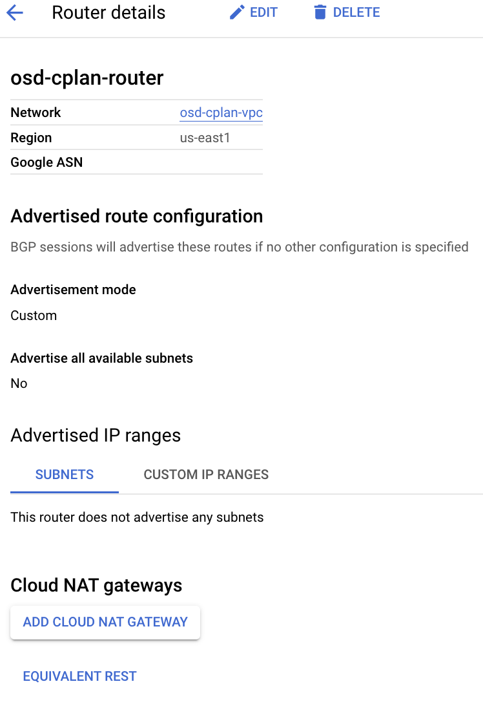
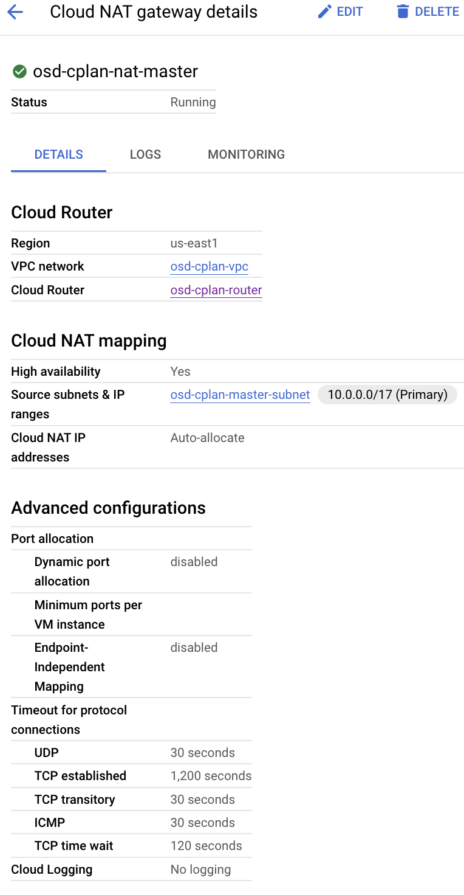
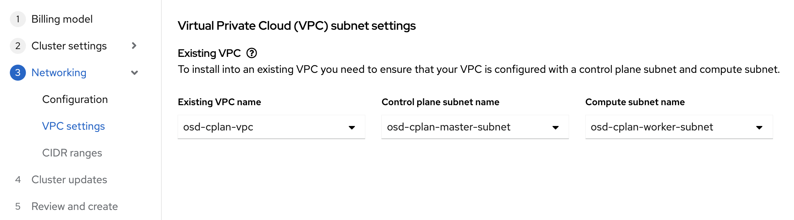
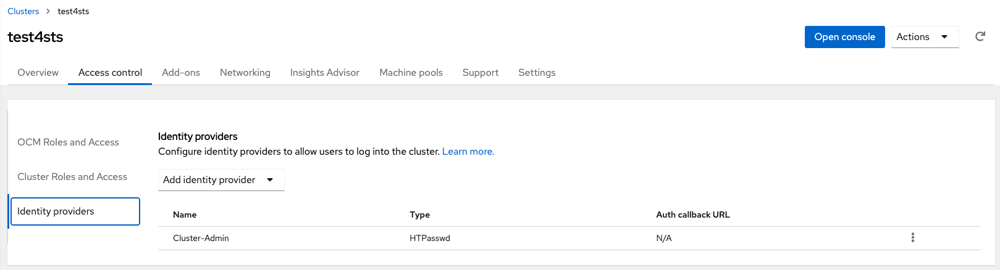
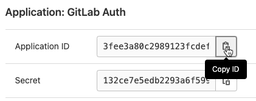
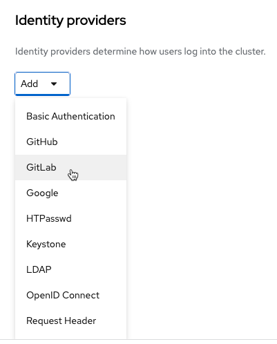
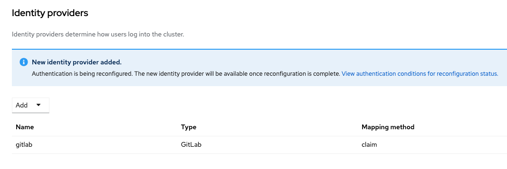

Welcome to MOBB Ninja
For full documentation visit mkdocs.org.
Commands
mkdocs new [dir-name]- Create a new project.mkdocs serve- Start the live-reloading docs server.mkdocs build- Build the documentation site.mkdocs -h- Print help message and exit.
Project layout
mkdocs.yml # The configuration file.
docs/
index.md # The documentation homepage.
... # Other markdown pages, images and other files.
Products ↵
ARO ↵
ARO Quickstart - Private Cluster with JumpHost
A Quickstart guide to deploying a Private Azure Red Hat OpenShift cluster.
Once the cluster is running you will need a way to access the private network that ARO is deployed into.
Author: Paul Czarkowski
Prerequisites
Azure CLI
Obviously you'll need to have an Azure account to configure the CLI against.
MacOS
See Azure Docs for alternative install options.
-
Install Azure CLI using homebrew
bash brew update && brew install azure-cli
Linux
See Azure Docs for alternative install options.
-
Import the Microsoft Keys
bash sudo rpm --import https://packages.microsoft.com/keys/microsoft.asc -
Add the Microsoft Yum Repository
bash cat << EOF | sudo tee /etc/yum.repos.d/azure-cli.repo [azure-cli] name=Azure CLI baseurl=https://packages.microsoft.com/yumrepos/azure-cli enabled=1 gpgcheck=1 gpgkey=https://packages.microsoft.com/keys/microsoft.asc EOF -
Install Azure CLI
bash sudo dnf install -y azure-cli
Prepare Azure Account for Azure OpenShift
-
Log into the Azure CLI by running the following and then authorizing through your Web Browser
bash az login -
Make sure you have enough Quota (change the location if you're not using
East US)bash az vm list-usage --location "East US" -o tablesee Addendum - Adding Quota to ARO account if you have less than
36Quota left forTotal Regional vCPUs. -
Register resource providers
bash az provider register -n Microsoft.RedHatOpenShift --wait az provider register -n Microsoft.Compute --wait az provider register -n Microsoft.Storage --wait az provider register -n Microsoft.Authorization --wait
Get Red Hat pull secret
-
Log into cloud.redhat.com
-
Browse to https://cloud.redhat.com/openshift/install/azure/aro-provisioned
-
click the Download pull secret button and remember where you saved it, you'll reference it later.
Deploy Azure OpenShift
Variables and Resource Group
Set some environment variables to use later, and create an Azure Resource Group.
-
Set the following environment variables
Change the values to suit your environment, but these defaults should work.
bash AZR_RESOURCE_LOCATION=eastus AZR_RESOURCE_GROUP=openshift-private AZR_CLUSTER=private-cluster AZR_PULL_SECRET=~/Downloads/pull-secret.txt NETWORK_SUBNET=10.0.0.0/20 CONTROL_SUBNET=10.0.0.0/24 MACHINE_SUBNET=10.0.1.0/24 FIREWALL_SUBNET=10.0.2.0/24 JUMPHOST_SUBNET=10.0.3.0/24 -
Create an Azure resource group
bash az group create \ --name $AZR_RESOURCE_GROUP \ --location $AZR_RESOURCE_LOCATION
Networking
Create a virtual network with two empty subnets
-
Create virtual network
bash az network vnet create \ --address-prefixes $NETWORK_SUBNET \ --name "$AZR_CLUSTER-aro-vnet-$AZR_RESOURCE_LOCATION" \ --resource-group $AZR_RESOURCE_GROUP -
Create control plane subnet
bash az network vnet subnet create \ --resource-group $AZR_RESOURCE_GROUP \ --vnet-name "$AZR_CLUSTER-aro-vnet-$AZR_RESOURCE_LOCATION" \ --name "$AZR_CLUSTER-aro-control-subnet-$AZR_RESOURCE_LOCATION" \ --address-prefixes $CONTROL_SUBNET \ --service-endpoints Microsoft.ContainerRegistry -
Create machine subnet
bash az network vnet subnet create \ --resource-group $AZR_RESOURCE_GROUP \ --vnet-name "$AZR_CLUSTER-aro-vnet-$AZR_RESOURCE_LOCATION" \ --name "$AZR_CLUSTER-aro-machine-subnet-$AZR_RESOURCE_LOCATION" \ --address-prefixes $MACHINE_SUBNET \ --service-endpoints Microsoft.ContainerRegistry -
Disable network policies for Private Link Service on the control plane subnet
This is required for the service to be able to connect to and manage the cluster.
bash az network vnet subnet update \ --name "$AZR_CLUSTER-aro-control-subnet-$AZR_RESOURCE_LOCATION" \ --resource-group $AZR_RESOURCE_GROUP \ --vnet-name "$AZR_CLUSTER-aro-vnet-$AZR_RESOURCE_LOCATION" \ --disable-private-link-service-network-policies true
Firewall + Internet Egress
This replaces the routes for the cluster to go through the Firewall for egress vs the LoadBalancer which we can later remove. It does come with extra Azure costs of course.
You can skip this step if you don't need to restrict egress.
-
Make sure you have the AZ CLI firewall extensions
bash az extension add -n azure-firewall az extension update -n azure-firewall -
Create a firewall network, IP, and firewall
```bash az network vnet subnet create \ -g $AZR_RESOURCE_GROUP \ --vnet-name "$AZR_CLUSTER-aro-vnet-$AZR_RESOURCE_LOCATION" \ -n "AzureFirewallSubnet" \ --address-prefixes $FIREWALL_SUBNET
az network public-ip create -g $AZR_RESOURCE_GROUP -n fw-ip \ --sku "Standard" --location $AZR_RESOURCE_LOCATION
az network firewall create -g $AZR_RESOURCE_GROUP \ -n aro-private -l $AZR_RESOURCE_LOCATION ```
-
Configure the firewall and configure IP Config (this may take 15 minutes)
```bash az network firewall ip-config create -g $AZR_RESOURCE_GROUP \ -f aro-private -n fw-config --public-ip-address fw-ip \ --vnet-name "$AZR_CLUSTER-aro-vnet-$AZR_RESOURCE_LOCATION"
FWPUBLIC_IP=$(az network public-ip show -g $AZR_RESOURCE_GROUP -n fw-ip --query "ipAddress" -o tsv) FWPRIVATE_IP=$(az network firewall show -g $AZR_RESOURCE_GROUP -n aro-private --query "ipConfigurations[0].privateIpAddress" -o tsv)
echo $FWPUBLIC_IP echo $FWPRIVATE_IP ```
-
Create and configure a route table
```bash az network route-table create -g $AZR_RESOURCE_GROUP --name aro-udr
sleep 10
az network route-table route create -g $AZR_RESOURCE_GROUP --name aro-udr \ --route-table-name aro-udr --address-prefix 0.0.0.0/0 \ --next-hop-type VirtualAppliance --next-hop-ip-address $FWPRIVATE_IP
az network route-table route create -g $AZR_RESOURCE_GROUP --name aro-vnet \ --route-table-name aro-udr --address-prefix 10.0.0.0/16 --name local-route \ --next-hop-type VirtualNetworkGateway ```
-
Create firewall rules for ARO resources
Note: ARO clusters do not need access to the internet, however your own workloads running on them may. You can skip this step if you don't need any egress at all.
-
Create a Network Rule to allow all http/https egress traffic (not recommended)
bash az network firewall network-rule create -g $AZR_RESOURCE_GROUP -f aro-private \ --collection-name 'allow-https' --name allow-all \ --action allow --priority 100 \ --source-addresses '*' --dest-addr '*' \ --protocols 'Any' --destination-ports 1-65535 -
Create Application Rules to allow to a restricted set of destinations
replace the target-fqdns with your desired destinations
```bash az network firewall application-rule create -g $AZR_RESOURCE_GROUP -f aro-private \ --collection-name 'Allow_Egress' \ --action allow \ --priority 100 \ -n 'required' \ --source-addresses '' \ --protocols 'http=80' 'https=443' \ --target-fqdns '.google.com' '*.bing.com'
az network firewall application-rule create -g $AZR_RESOURCE_GROUP -f aro-private \ --collection-name 'Docker' \ --action allow \ --priority 200 \ -n 'docker' \ --source-addresses '' \ --protocols 'http=80' 'https=443' \ --target-fqdns 'cloudflare.docker.com' '*registry-1.docker.io' 'apt.dockerproject.org' 'auth.docker.io' ```
-
-
Update the subnets to use the Firewall
Once the cluster is deployed successfully you can update the subnets to use the firewall instead of the default outbound loadbalancer rule.
```bash az network vnet subnet update -g $AZR_RESOURCE_GROUP \ --vnet-name $AZR_CLUSTER-aro-vnet-$AZR_RESOURCE_LOCATION \ --name "$AZR_CLUSTER-aro-control-subnet-$AZR_RESOURCE_LOCATION" \ --route-table aro-udr
az network vnet subnet update -g $AZR_RESOURCE_GROUP \ --vnet-name $AZR_CLUSTER-aro-vnet-$AZR_RESOURCE_LOCATION \ --name "$AZR_CLUSTER-aro-machine-subnet-$AZR_RESOURCE_LOCATION" \ --route-table aro-udr ```
-
Create the cluster
This will take between 30 and 45 minutes.
bash az aro create \ --resource-group $AZR_RESOURCE_GROUP \ --name $AZR_CLUSTER \ --vnet "$AZR_CLUSTER-aro-vnet-$AZR_RESOURCE_LOCATION" \ --master-subnet "$AZR_CLUSTER-aro-control-subnet-$AZR_RESOURCE_LOCATION" \ --worker-subnet "$AZR_CLUSTER-aro-machine-subnet-$AZR_RESOURCE_LOCATION" \ --apiserver-visibility Private \ --ingress-visibility Private \ --pull-secret @$AZR_PULL_SECRET
Jump Host
With the cluster in a private network, we can create a Jump host in order to connect to it. You can do this while the cluster is being created.
-
Create jump subnet
bash az network vnet subnet create \ --resource-group $AZR_RESOURCE_GROUP \ --vnet-name "$AZR_CLUSTER-aro-vnet-$AZR_RESOURCE_LOCATION" \ --name JumpSubnet \ --address-prefixes $JUMPHOST_SUBNET \ --service-endpoints Microsoft.ContainerRegistry -
Create a jump host
bash az vm create --name jumphost \ --resource-group $AZR_RESOURCE_GROUP \ --ssh-key-values $HOME/.ssh/id_rsa.pub \ --admin-username aro \ --image "RedHat:RHEL:8.2:8.2.2021040911" \ --subnet JumpSubnet \ --public-ip-address jumphost-ip \ --vnet-name "$AZR_CLUSTER-aro-vnet-$AZR_RESOURCE_LOCATION" -
Save the jump host public IP address
bash JUMP_IP=$(az vm list-ip-addresses -g $AZR_RESOURCE_GROUP -n jumphost -o tsv \ --query '[].virtualMachine.network.publicIpAddresses[0].ipAddress') echo $JUMP_IP -
ssh to jump host forwarding port 1337 as a socks proxy.
replace the IP with the IP of the jump box from the previous step.
bash ssh -D 1337 -C -i $HOME/.ssh/id_rsa aro@$JUMP_IP -
test the socks proxy
bash curl --socks5-hostname localhost:1337 http://www.google.com/ -
Install tools
```bash sudo yum install -y gcc libffi-devel python3-devel openssl-devel jq sudo rpm --import https://packages.microsoft.com/keys/microsoft.asc
echo -e "[azure-cli] name=Azure CLI baseurl=https://packages.microsoft.com/yumrepos/azure-cli enabled=1 gpgcheck=1 gpgkey=https://packages.microsoft.com/keys/microsoft.asc" | sudo tee /etc/yum.repos.d/azure-cli.repo
sudo yum install -y azure-cli wget https://mirror.openshift.com/pub/openshift-v4/clients/ocp/latest/openshift-client-linux.tar.gz mkdir openshift tar -zxvf openshift-client-linux.tar.gz -C openshift sudo install openshift/oc /usr/local/bin/oc sudo install openshift/kubectl /usr/local/bin/kubectl ```
-
Wait until the ARO cluster is fully provisioned.
-
Login to Azure
bash az login -
Get OpenShift console URL
set these variables to match the ones you set at the start.
bash AZR_RESOURCE_GROUP=openshift-private AZR_CLUSTER=private-cluster APISERVER=$(az aro show \ --name $AZR_CLUSTER \ --resource-group $AZR_RESOURCE_GROUP \ -o tsv --query apiserverProfile.url) echo $APISERVER -
Get OpenShift credentials
bash ADMINPW=$(az aro list-credentials \ --name $AZR_CLUSTER \ --resource-group $AZR_RESOURCE_GROUP \ --query kubeadminPassword \ -o tsv)
Test Access
-
Test Access to the cluster via the socks proxy
```bash CONSOLE=$(az aro show \ --name $AZR_CLUSTER \ --resource-group $AZR_RESOURCE_GROUP \ -o tsv --query consoleProfile) echo $CONSOLE
curl --socks5-hostname localhost:1337 $CONSOLE ```
Unfortunately you can't [easily] use the socks proxy with the
occommand, but at least you can access the console via the socks proxy.
- Set localhost:1337 as a socks proxy in your browser and verify you can access the cluster by browsing to the
$CONSOLEurl.
Delete Cluster
Once you're done its a good idea to delete the cluster to ensure that you don't get a surprise bill.
-
Delete the cluster
bash az aro delete -y \ --resource-group $AZR_RESOURCE_GROUP \ --name $AZR_CLUSTER -
Delete the Azure resource group
Only do this if there's nothing else in the resource group.
bash az group delete -y \ --name $AZR_RESOURCE_GROUP
Addendum
Adding Quota to ARO account

-
Set Issue Type to "Service and subscription limits (quotas)"
-
Set Quota Type to "Compute-VM (cores-vCPUs) subscription limit increases"
-
Click Next Solutions >>
-
Click Enter details
-
Set Deployment Model to "Resource Manager
-
Set Locations to "(US) East US"
-
Set Types to "Standard"
-
Under Standard check "DSv3" and "DSv4"
-
Set New vCPU Limit for each (example "60")
-
Click Save and continue
-
Click Review + create >>
-
Wait until quota is increased.
Registering an ARO cluster to OpenShift Cluster Manager
ARO clusters do not come connected to OpenShift Cluster Manager by default, because Azure would like customers to specifically opt-in to connections / data sent outside of Azure. This is the case with registering to OpenShift cluster manager, which enables a telemetry service in ARO.
Prerequisites
- An Red Hat account. If you have any subscriptions with Red Hat, you will have a Red Hat account. If not, then you can create an account easily at https://cloud.redhat.com.
Steps
-
Login to https://console.redhat.com with you Red Hat account.
-
Go to https://console.redhat.com/openshift/downloads and download your pull-secret file. This is a file that includes an authentication for cloud.openshift.com which is used by OpenShift Cluster Manager.
-
Follow the Update pull secret instructions to merge your pull-secret (in particular cloud.openshift.com) in your ARO pull secret. Be careful not to overwrite the ARO cluster pull secrets that come by default - it explains how in that article.
-
After waiting a few minutes (but it could be up to an hour), your cluster should be automatically registered in this list in OpenShift Cluster Manager; https://console.redhat.com/openshift
You can check the cluster ID within the Cluster Overview section of the admin console with the ID of the cluster in OCM to make sure the right cluster is registered.
- The cluster will appear as a 60-day self-supported evaluation cluster. However, again, wait about an hour (but in this case, it can take up to 24 hours), and the cluster will be automatically updated to an ARO type cluster, with full support. You don't need to change the support level yourself.
This makes the cluster a fully supported cluster within the Red Hat cloud console, with access to raise support tickets, also.
ARO with Nvidia GPU Workloads
ARO guide to running Nvidia GPU workloads.
Author: Byron Miller, Stuart Kirk
Table of Contents
- Do not remove this line (it will not be displayed) {:toc}
Prerequisites
- oc cli
- jq, moreutils, and gettext package
- ARO 4.10
If you need to install an ARO cluster, please read our ARO Quick start guide. Please be sure if you're installing or using an existing ARO cluster that it is 4.10.x or higher.
As of OpenShift 4.10, it is no longer necessary to set up entitlements to use the nVidia Operator. This has greatly simplified the setup of the cluster for GPU workloads.
Linux:
sudo dnf install jq moreutils gettext
MacOS
brew install jq moreutils gettext
Helm Prerequisites
If you plan to use Helm to deploy the GPU operator, you will need do the following
-
Add the MOBB chart repository to your Helm
bash helm repo add mobb https://rh-mobb.github.io/helm-charts/ -
Update your repositories
bash helm repo update
GPU Quota
All GPU quotas in Azure are 0 by default. You will need to login to the azure portal and request GPU quota. There is a lot of competition for GPU workers, so you may have to provision an ARO cluster in a region where you can actually reserve GPU. ARO supports the following GPU workers: * NC4as T4 v3 * NC8as T4 v3 * NC16as T4 v3 * NC464as T4 v3
Please remember that when you request quota that Azure is per core. To request a single NC4as T4 v3 node, you will need to request quota in groups of 4. If you wish to request an NC16as T4 v3 you will need to request quota of 16.
- Login to azure
Login to portal.azure.com, type "quotas" in search by, click on Compute and in the search box type "NCAsv3_T4". Select the region your cluster is in (select checkbox) and then click Request quota increase and ask for quota (I chose 8 so i can build two demo clusters of NC4as T4s).
- Configure quota

Log in to your ARO cluster
- Login to OpenShift - we'll use the kubeadmin account here but you can login with your user account as long as you have cluster-admin.
bash
oc login <apiserver> -u kubeadmin -p <kubeadminpass>
Pull secret (Conditional)
We'll update our pull secret to make sure that we can install operators as well as connect to cloud.redhat.com.
If you have already re-created a full pull secret with cloud.redhat.com enabled you can skip this step
Using Helm
- Before Deploying the chart you need it to adopt the existing pull secret
bash
kubectl -n openshift-config annotate secret \
pull-secret meta.helm.sh/release-name=pull-secret
kubectl -n openshift-config annotate secret \
pull-secret meta.helm.sh/release-namespace=openshift-config
kubectl -n openshift-config label secret \
pull-secret app.kubernetes.io/managed-by=Helm
-
Download your new pull secret from https://console.redhat.com/openshift/downloads -> Tokens -> Pull secret and use it to update create the pull secret in your cluster.
-
Update the pull secret
This chart will merge the in-cluster pull secret with the new pull secret.
helm upgrade --install pull-secret mobb/aro-pull-secret \
-n openshift-config --set-file pullSecret=$HOME/Downloads/pull-secret.txt
- Enable Operator Hub
bash
oc patch configs.samples.operator.openshift.io cluster --type=merge \
-p='{"spec":{"managementState":"Managed"}}'
oc patch operatorhub cluster --type=merge \
-p='{"spec":{"sources":[
{"name":"redhat-operators","disabled":false},
{"name":"certified-operators","disabled":false},
{"name":"community-operators","disabled":false},
{"name":"redhat-marketplace","disabled":false}
]}}'
- Skip to GPU Machine Set
Manually
-
Log into cloud.redhat.com
-
Browse to https://cloud.redhat.com/openshift/install/azure/aro-provisioned
-
click the Download pull secret button and save it as pull-secret.txt
The following steps will need to be ran in the same working directory as your pull-secret.txt
- Export existing pull secret
bash
oc get secret pull-secret -n openshift-config -o json | jq -r '.data.".dockerconfigjson"' | base64 --decode > export-pull.json
- Merge downloaded pull secret with system pull secret to add cloud.redhat.com
bash
jq -s '.[0] * .[1]' export-pull.json pull-secret.txt | tr -d "\n\r" > new-pull-secret.json
- Upload new secret file
bash
oc set data secret/pull-secret -n openshift-config --from-file=.dockerconfigjson=new-pull-secret.json
You may need to wait for about ~1hr for everything to sync up with cloud.redhat.com.
- Delete secrets
bash
rm pull-secret.txt export-pull.json new-pull-secret.json
GPU Machine Set
ARO still uses Kubernetes Machinsets to create a machine set. I'm going to export the first machine set in my cluster (az 1) and use that as a template to build a single GPU machine in southcentralus region 1.
Helm
- Create a new machine-set (replicas of 1), see the Chart's values file for configuration options
helm upgrade --install -n openshift-machine-api \
gpu mobb/aro-gpu
- Wait for the new GPU nodes to be available
bash
watch oc get machines
- Skip to Install Nvidia GPU Operator
Manually
- View existing machine sets
For ease of set up, I'm going to grab the first machine set and use that as the one I will clone to create our GPU machine set.
bash
MACHINESET=$(oc get machineset -n openshift-machine-api -o=jsonpath='{.items[0]}' | jq -r '[.metadata.name] | @tsv')
- Save a copy of example machine set
bash
oc get machineset -n openshift-machine-api $MACHINESET -o json > gpu_machineset.json
- Change the .metadata.name field to a new unique name
I'm going to create a unique name for this single node machine set that shows nvidia-worker-
that follows a similar pattern as all the other machine sets.
bash
jq '.metadata.name = "nvidia-worker-southcentralus1"' gpu_machineset.json| sponge gpu_machineset.json
-
Ensure spec.replicas matches the desired replica count for the MachineSet
bash jq '.spec.replicas = 1' gpu_machineset.json| sponge gpu_machineset.json -
Change the .spec.selector.matchLabels.machine.openshift.io/cluster-api-machineset field to match the .metadata.name field
bash
jq '.spec.selector.matchLabels."machine.openshift.io/cluster-api-machineset" = "nvidia-worker-southcentralus1"' gpu_machineset.json| sponge gpu_machineset.json
- Change the .spec.template.metadata.labels.machine.openshift.io/cluster-api-machineset to match the .metadata.name field
bash
jq '.spec.template.metadata.labels."machine.openshift.io/cluster-api-machineset" = "nvidia-worker-southcentralus1"' gpu_machineset.json| sponge gpu_machineset.json
- Change the spec.template.spec.providerSpec.value.vmSize to match the desired GPU instance type from Azure.
The machine we're using is Standard_NC4as_T4_v3.
bash
jq '.spec.template.spec.providerSpec.value.vmSize = "Standard_NC4as_T4_v3"' gpu_machineset.json | sponge gpu_machineset.json
-
Change the spec.template.spec.providerSpec.value.zone to match the desired zone from Azure
bash jq '.spec.template.spec.providerSpec.value.zone = "1"' gpu_machineset.json | sponge gpu_machineset.json -
Delete the .status section of the yaml file
bash
jq 'del(.status)' gpu_machineset.json | sponge gpu_machineset.json
- Verify the other data in the yaml file.
Create GPU machine set
These steps will create the new GPU machine. It may take 10-15 minutes to provision a new GPU machine. If this step fails, please login to the azure portal and ensure you didn't run across availability issues. You can go "Virtual Machines" and search for the worker name you created above to see the status of VMs.
- Create GPU Machine set
bash
oc create -f gpu_machineset.json
This command will take a few minutes to complete.
- Verify GPU machine set
Machines should be getting deployed. You can view the status of the machine set with the following commands
bash
oc get machineset -n openshift-machine-api
oc get machine -n openshift-machine-api
Once the machines are provisioned, which could take 5-15 minutes, machines will show as nodes in the node list.
bash
oc get nodes
You should see a node with the "nvidia-worker-southcentralus1" name it we created earlier.
Install Nvidia GPU Operator
This will create the nvidia-gpu-operator name space, set up the operator group and install the Nvidia GPU Operator.
Helm
-
Create namespaces
bash oc create namespace openshift-nfd oc create namespace nvidia-gpu-operator -
Use the
mobb/operatorhubchart to deploy the needed operatorsbash helm upgrade -n nvidia-gpu-operator nvidia-gpu-operator \ mobb/operatorhub --install \ --values https://raw.githubusercontent.com/rh-mobb/helm-charts/main/charts/nvidia-gpu/files/operatorhub.yaml -
Wait until the two operators are running
bash watch kubectl get pods -n openshift-nfdNAME READY STATUS RESTARTS AGE nfd-controller-manager-7b66c67bd9-rk98w 2/2 Running 0 47sbash watch oc get pods -n nvidia-gpu-operatorNAME READY STATUS RESTARTS AGE gpu-operator-5d8cb7dd5f-c4ljk 1/1 Running 0 87s -
Install the Nvidia GPU Operator chart
```bash
bash helm upgrade --install -n nvidia-gpu-operator nvidia-gpu \ mobb/nvidia-gpu --disable-openapi-validation -
Skip to Validate GPU
Manually
- Create Nvidia namespace
yaml
cat <<EOF | oc apply -f -
apiVersion: v1
kind: Namespace
metadata:
name: nvidia-gpu-operator
EOF
- Create Operator Group
yaml
cat <<EOF | oc apply -f -
apiVersion: operators.coreos.com/v1
kind: OperatorGroup
metadata:
name: nvidia-gpu-operator-group
namespace: nvidia-gpu-operator
spec:
targetNamespaces:
- nvidia-gpu-operator
EOF
- Get latest nvidia channel
bash
CHANNEL=$(oc get packagemanifest gpu-operator-certified -n openshift-marketplace -o jsonpath='{.status.defaultChannel}')
- Get latest nvidia package
bash
PACKAGE=$(oc get packagemanifests/gpu-operator-certified -n openshift-marketplace -ojson | jq -r '.status.channels[] | select(.name == "'$CHANNEL'") | .currentCSV')
- Create Subscription
yaml
envsubst <<EOF | oc apply -f -
apiVersion: operators.coreos.com/v1alpha1
kind: Subscription
metadata:
name: gpu-operator-certified
namespace: nvidia-gpu-operator
spec:
channel: "$CHANNEL"
installPlanApproval: Automatic
name: gpu-operator-certified
source: certified-operators
sourceNamespace: openshift-marketplace
startingCSV: "$PACKAGE"
EOF
- Wait for Operator to finish installing
Don't proceed until you have verified that the operator has finished installing. It's also a good point to ensure that your GPU worker is online.

Install Node Feature Discovery Operator
The node feature discovery operator will discover the GPU on your nodes and appropriately label the nodes so you can target them for workloads. We'll install the NFD operator into the opneshift-ndf namespace and create the "subscription" which is the configuration for NFD.
Official Documentation for Installing Node Feature Discovery Operator
- Set up Name Space
yaml
cat <<EOF | oc apply -f -
apiVersion: v1
kind: Namespace
metadata:
name: openshift-nfd
EOF
- Create OperatorGroup
yaml
cat <<EOF | oc apply -f -
apiVersion: operators.coreos.com/v1
kind: OperatorGroup
metadata:
generateName: openshift-nfd-
name: openshift-nfd
namespace: openshift-nfd
EOF
- Create Subscription
yaml
cat <<EOF | oc apply -f -
apiVersion: operators.coreos.com/v1alpha1
kind: Subscription
metadata:
name: nfd
namespace: openshift-nfd
spec:
channel: "stable"
installPlanApproval: Automatic
name: nfd
source: redhat-operators
sourceNamespace: openshift-marketplace
EOF
1. Wait for Node Feature discovery to complete installation
You can login to your openshift console and view operators or simply wait a few minutes. The next step will error until the operator has finished installing.
- Create NFD Instance
yaml
cat <<EOF | oc apply -f -
kind: NodeFeatureDiscovery
apiVersion: nfd.openshift.io/v1
metadata:
name: nfd-instance
namespace: openshift-nfd
spec:
customConfig:
configData: |
# - name: "more.kernel.features"
# matchOn:
# - loadedKMod: ["example_kmod3"]
# - name: "more.features.by.nodename"
# value: customValue
# matchOn:
# - nodename: ["special-.*-node-.*"]
operand:
image: >-
registry.redhat.io/openshift4/ose-node-feature-discovery@sha256:07658ef3df4b264b02396e67af813a52ba416b47ab6e1d2d08025a350ccd2b7b
servicePort: 12000
workerConfig:
configData: |
core:
# labelWhiteList:
# noPublish: false
sleepInterval: 60s
# sources: [all]
# klog:
# addDirHeader: false
# alsologtostderr: false
# logBacktraceAt:
# logtostderr: true
# skipHeaders: false
# stderrthreshold: 2
# v: 0
# vmodule:
## NOTE: the following options are not dynamically run-time
## configurable and require a nfd-worker restart to take effect
## after being changed
# logDir:
# logFile:
# logFileMaxSize: 1800
# skipLogHeaders: false
sources:
# cpu:
# cpuid:
## NOTE: whitelist has priority over blacklist
# attributeBlacklist:
# - "BMI1"
# - "BMI2"
# - "CLMUL"
# - "CMOV"
# - "CX16"
# - "ERMS"
# - "F16C"
# - "HTT"
# - "LZCNT"
# - "MMX"
# - "MMXEXT"
# - "NX"
# - "POPCNT"
# - "RDRAND"
# - "RDSEED"
# - "RDTSCP"
# - "SGX"
# - "SSE"
# - "SSE2"
# - "SSE3"
# - "SSE4.1"
# - "SSE4.2"
# - "SSSE3"
# attributeWhitelist:
# kernel:
# kconfigFile: "/path/to/kconfig"
# configOpts:
# - "NO_HZ"
# - "X86"
# - "DMI"
pci:
deviceClassWhitelist:
- "0200"
- "03"
- "12"
deviceLabelFields:
# - "class"
- "vendor"
# - "device"
# - "subsystem_vendor"
# - "subsystem_device"
# usb:
# deviceClassWhitelist:
# - "0e"
# - "ef"
# - "fe"
# - "ff"
# deviceLabelFields:
# - "class"
# - "vendor"
# - "device"
# custom:
# - name: "my.kernel.feature"
# matchOn:
# - loadedKMod: ["example_kmod1", "example_kmod2"]
# - name: "my.pci.feature"
# matchOn:
# - pciId:
# class: ["0200"]
# vendor: ["15b3"]
# device: ["1014", "1017"]
# - pciId :
# vendor: ["8086"]
# device: ["1000", "1100"]
# - name: "my.usb.feature"
# matchOn:
# - usbId:
# class: ["ff"]
# vendor: ["03e7"]
# device: ["2485"]
# - usbId:
# class: ["fe"]
# vendor: ["1a6e"]
# device: ["089a"]
# - name: "my.combined.feature"
# matchOn:
# - pciId:
# vendor: ["15b3"]
# device: ["1014", "1017"]
# loadedKMod : ["vendor_kmod1", "vendor_kmod2"]
EOF
- Verify NFD is ready.
This operator should say Available in the status

Apply nVidia Cluster Config
We'll now apply the nvidia cluster config. Please read the nvidia documentation on customizing this if you have your own private repos or specific settings. This will be another process that takes a few minutes to complete.
- Apply cluster config
yaml
cat <<EOF | oc apply -f -
apiVersion: nvidia.com/v1
kind: ClusterPolicy
metadata:
name: gpu-cluster-policy
spec:
migManager:
enabled: true
operator:
defaultRuntime: crio
initContainer: {}
runtimeClass: nvidia
deployGFD: true
dcgm:
enabled: true
gfd: {}
dcgmExporter:
config:
name: ''
driver:
licensingConfig:
nlsEnabled: false
configMapName: ''
certConfig:
name: ''
kernelModuleConfig:
name: ''
repoConfig:
configMapName: ''
virtualTopology:
config: ''
enabled: true
use_ocp_driver_toolkit: true
devicePlugin: {}
mig:
strategy: single
validator:
plugin:
env:
- name: WITH_WORKLOAD
value: 'true'
nodeStatusExporter:
enabled: true
daemonsets: {}
toolkit:
enabled: true
EOF
- Verify Cluster Policy
Login to OpenShift console and browse to operators and make sure you're in nvidia-gpu-operator namespace. You should see it say State: Ready once everything is complete.

Validate GPU
It may take some time for the nVidia Operator and NFD to completely install and self-identify the machines. These commands can be ran to help validate that everything is running as expected.
-
Verify NFD can see your GPU(s)
bash oc describe node | egrep 'Roles|pci-10de' | grep -v masterYou should see output like:
bash Roles: worker feature.node.kubernetes.io/pci-10de.present=true -
Verify node labels
You can see the node labels by logging into the OpenShift console -> Compute -> Nodes -> nvidia-worker-southcentralus1-

- Nvidia SMI tool verification
bash
oc project nvidia-gpu-operator
for i in $(oc get pod -lopenshift.driver-toolkit=true --no-headers |awk '{print $1}'); do echo $i; oc exec -it $i -- nvidia-smi ; echo -e '\n' ; done
You should see output that shows the GPUs available on the host such as this example screenshot. (Varies depending on GPU worker type)

- Create Pod to run a GPU workload
yaml
oc project nvidia-gpu-operator
cat <<EOF | oc apply -f -
apiVersion: v1
kind: Pod
metadata:
name: cuda-vector-add
spec:
restartPolicy: OnFailure
containers:
- name: cuda-vector-add
image: "quay.io/giantswarm/nvidia-gpu-demo:latest"
resources:
limits:
nvidia.com/gpu: 1
nodeSelector:
nvidia.com/gpu.present: true
EOF
- View logs
bash
oc logs cuda-vector-add --tail=-1
Please note, if you get an error "Error from server (BadRequest): container "cuda-vector-add" in pod "cuda-vector-add" is waiting to start: ContainerCreating" try running "oc delete pod cuda-vector-add" and then re-run the create statement above. I've seen issues where if this step is ran before all of the operator consolidation is done it may just sit there.
You should see Output like the following (mary vary depending on GPU):
bash
[Vector addition of 5000 elements]
Copy input data from the host memory to the CUDA device
CUDA kernel launch with 196 blocks of 256 threads
Copy output data from the CUDA device to the host memory
Test PASSED
Done
- If successful, the pod can be deleted
bash
oc delete pod cuda-vector-add
Azure Front Door with ARO ( Azure Red Hat OpenShift )
Securing exposing an Internet facing application with a private ARO Cluster.
When you create a cluster on ARO you have several options in making the cluster public or private. With a public cluster you are allowing Internet traffic to the api and *.apps endpoints. With a private cluster you can make either or both the api and .apps endpoints private.
How can you allow Internet access to an application running on your private cluster where the .apps endpoint is private? This document will guide you through using Azure Frontdoor to expose your applications to the Internet. There are several advantages of this approach, namely your cluster and all the resources in your Azure account can remain private, providing you an extra layer of security. Azure FrontDoor operates at the edge so we are controlling traffic before it even gets into your Azure account. On top of that, Azure FrontDoor also offers WAF and DDoS protection, certificate management and SSL Offloading just to name a few benefits.
Kevin Collins *Adopted from ARO Reference Architecture
06/16/2022
Prerequisites
- az cli
- oc cli
- a custom domain
- a DNS zone that you can easily modify
To build and deploy the application * maven cli * quarkus cli * OpenJDK Java 8
Make sure to use the same terminal session while going through guide for all commands as we will reference envrionment variables set or created through the guide.
Get Started
-
Create a private ARO cluster.
Follow this guide to Create a private ARO cluster or simply run this bash script
Set Evironment Variables
- Manually set environment variables
```
AROCLUSTER=
ARORG=
AFD_NAME=
DOMAIN='e.g. aro.kmobb.com' This is the domain that you will be adding to Azure DNS to manage.
ARO_APP_FQDN='e.g. minesweeper.aro.kmobb.com' (note - we will be deploying an application called minesweeper to test front door. Select a domain you would like to use for the application. For example minesweeper.aro.kmobb.com ... where aro.kmobb.com is the domain you manage and have DNS access to.)
AFD_MINE_CUSTOM_DOMAIN_NAME='minesweeper-aro-kmobb-com' (note - this should be your domain name without and .'s for example minesweeper-aro-kmobb-com)
PRIVATEENDPOINTSUBNET_PREFIX= subnet in the VNET you cluster is in. If you following the example above to create a custer where you virtual network is 10.0.0.0/20 then you can use '10.0.6.0/24'
PRIVATEENDPOINTSUBNET_NAME='PrivateEndpoint-subnet' ```
- Set environment variables with Bash
```bash UNIQUEID=$RANDOM
ARO_RGNAME=$(az aro show -n $AROCLUSTER -g $ARORG --query "clusterProfile.resourceGroupId" -o tsv | sed 's/.*\///')
LOCATION=$(az aro show --name $AROCLUSTER --resource-group $ARORG --query location -o tsv)
INTERNAL_LBNAME=$(az network lb list --resource-group $ARO_RGNAME --query "[? contains(name, 'internal')].name" -o tsv)
WORKER_SUBNET_NAME=$(az aro show --name $AROCLUSTER --resource-group $ARORG --query 'workerProfiles[0].subnetId' -o tsv | sed 's/.*\///')
WORKER_SUBNET_ID=$(az aro show --name $AROCLUSTER --resource-group $ARORG --query 'workerProfiles[0].subnetId' -o tsv)
VNET_NAME=$(az network vnet list -g $ARORG --query '[0].name' -o tsv)
LBCONFIG_ID=$(az network lb frontend-ip list -g $ARO_RGNAME --lb-name $INTERNAL_LBNAME --query "[? contains(subnet.id,'$WORKER_SUBNET_ID')].id" -o tsv)
LBCONFIG_IP=$(az network lb frontend-ip list -g $ARO_RGNAME --lb-name $INTERNAL_LBNAME --query "[? contains(subnet.id,'$WORKER_SUBNET_ID')].privateIpAddress" -o tsv)
```
Create a Private Link Service
After we have the cluster up and running, we need to create a private link service. The private link service will provide private and secure connectivity between the Front Door Service and our cluster.
- Disable the worker subnet private link service network policy for the worker subnet
bash
az network vnet subnet update \
--disable-private-link-service-network-policies true \
--name $WORKER_SUBNET_NAME \
--resource-group $ARORG \
--vnet-name $VNET_NAME
- Create a private link service targeting the worker subnets
```bash az network private-link-service create \ --name $AROCLUSTER-pls \ --resource-group $ARORG \ --private-ip-address-version IPv4 \ --private-ip-allocation-method Dynamic \ --vnet-name $VNET_NAME \ --subnet $WORKER_SUBNET_NAME \ --lb-frontend-ip-configs $LBCONFIG_ID
privatelink_id=$(az network private-link-service show -n $AROCLUSTER-pls -g $ARORG --query 'id' -o tsv) ```
Create and Configure an instance of Azure Front Door
- Create a Front Door Instance
```bash az afd profile create \ --resource-group $ARORG \ --profile-name $AFD_NAME \ --sku Premium_AzureFrontDoor
afd_id=$(az afd profile show -g $ARORG --profile-name $AFD_NAME --query 'id' -o tsv) ```
- Create an endpoint for the ARO Internal Load Balancer
bash
az afd endpoint create \
--resource-group $ARORG \
--enabled-state Enabled \
--endpoint-name 'aro-ilb'$UNIQUEID \
--profile-name $AFD_NAME
- Create a Front Door Origin Group that will point to the ARO Internal Loadbalancer
bash
az afd origin-group create \
--origin-group-name 'afdorigin' \
--probe-path '/' \
--probe-protocol Http \
--probe-request-type GET \
--probe-interval-in-seconds 100 \
--profile-name $AFD_NAME \
--resource-group $ARORG \
--probe-interval-in-seconds 120 \
--sample-size 4 \
--successful-samples-required 3 \
--additional-latency-in-milliseconds 50
- Create a Front Door Origin with the above Origin Group that will point to the ARO Internal Loadbalancer
bash
az afd origin create \
--enable-private-link true \
--private-link-resource $privatelink_id \
--private-link-location $LOCATION \
--private-link-request-message 'Private link service from AFD' \
--weight 1000 \
--priority 1 \
--http-port 80 \
--https-port 443 \
--origin-group-name 'afdorigin' \
--enabled-state Enabled \
--host-name $LBCONFIG_IP \
--origin-name 'afdorigin' \
--profile-name $AFD_NAME \
--resource-group $ARORG
- Approve the private link connection
```bash privatelink_pe_id=$(az network private-link-service show -n $AROCLUSTER-pls -g $ARORG --query 'privateEndpointConnections[0].id' -o tsv)
az network private-endpoint-connection approve \ --description 'Approved' \ --id $privatelink_pe_id ```
- Add your custom domain to Azure Front Door
bash
az afd custom-domain create \
--certificate-type ManagedCertificate \
--custom-domain-name $AFD_MINE_CUSTOM_DOMAIN_NAME \
--host-name $ARO_APP_FQDN \
--minimum-tls-version TLS12 \
--profile-name $AFD_NAME \
--resource-group $ARORG
- Create an Azure Front Door endpoint for your custom domain
bash
az afd endpoint create \
--resource-group $ARORG \
--enabled-state Enabled \
--endpoint-name 'aro-mine-'$UNIQUEID \
--profile-name $AFD_NAME
- Add an Azure Front Door route for your custom domain
bash
az afd route create \
--endpoint-name 'aro-mine-'$UNIQUEID \
--forwarding-protocol HttpOnly \
--https-redirect Disabled \
--origin-group 'afdorigin' \
--profile-name $AFD_NAME \
--resource-group $ARORG \
--route-name 'aro-mine-route' \
--supported-protocols Http Https \
--patterns-to-match '/*' \
--custom-domains $AFD_MINE_CUSTOM_DOMAIN_NAME
- Update DNS
Get a validation token from Front Door so Front Door can validate your domain
bash
afdToken=$(az afd custom-domain show \
--resource-group $ARORG \
--profile-name $AFD_NAME \
--custom-domain-name $AFD_MINE_CUSTOM_DOMAIN_NAME \
--query "validationProperties.validationToken")
- Create a DNS Zone
bash
az network dns zone create -g $ARORG -n $DOMAIN
>You will need to configure your nameservers to point to azure. The output of running this zone create will show you the nameservers for this record that you will need to set up within your domain registrar.
Create a new text record in your DNS server
bash
az network dns record-set txt add-record -g $ARORG -z $DOMAIN -n _dnsauth.$(echo $ARO_APP_FQDN | sed 's/\..*//') --value $afdToken --record-set-name _dnsauth.$(echo $ARO_APP_FQDN | sed 's/\..*//')
- Check if the domain has been validated:
Note this can take several hours Your FQDN will not resolve until Front Door validates your domain.
bash
az afd custom-domain list -g $ARORG --profile-name $AFD_NAME --query "[? contains(hostName, '$ARO_APP_FQDN')].domainValidationState"
- Add a CNAME record to DNS
Get the Azure Front Door endpoint:
bash
afdEndpoint=$(az afd endpoint show -g $ARORG --profile-name $AFD_NAME --endpoint-name aro-mine-$UNIQUEID --query "hostName" -o tsv)
Create a cname record for the application
bash
az network dns record-set cname set-record -g $ARORG -z $DOMAIN \
-n $(echo $ARO_APP_FQDN | sed 's/\..*//') -z $DOMAIN -c $afdEndpoint
Deploy an application
Now the fun part, let's deploy an application!
We will be deploying a Java based application called microsweeper. This is an application that runs on OpenShift and uses a PostgreSQL database to store scores. With ARO being a first class service on Azure, we will create an Azure Database for PostgreSQL service and connect it to our cluster with a private endpoint.
- Create a Azure Database for PostgreSQL servers service
```bash az postgres server create --name microsweeper-database --resource-group $ARORG --location $LOCATION --admin-user quarkus --admin-password r3dh4t1! --sku-name GP_Gen5_2
POSTGRES_ID=$(az postgres server show -n microsweeper-database -g $ARORG --query 'id' -o tsv) ```
- Create a private endpoint connection for the database
```bash az network vnet subnet create \ --resource-group $ARORG \ --vnet-name $VNET_NAME \ --name $PRIVATEENDPOINTSUBNET_NAME \ --address-prefixes $PRIVATEENDPOINTSUBNET_PREFIX \ --disable-private-endpoint-network-policies true
az network private-endpoint create \ --name 'postgresPvtEndpoint' \ --resource-group $ARORG \ --vnet-name $VNET_NAME \ --subnet $PRIVATEENDPOINTSUBNET_NAME \ --private-connection-resource-id $POSTGRES_ID \ --group-id 'postgresqlServer' \ --connection-name 'postgresdbConnection' ``` 1. Create and configure a private DNS Zone for the Postgres database
```bash az network private-dns zone create \ --resource-group $ARORG \ --name 'privatelink.postgres.database.azure.com'
az network private-dns link vnet create \ --resource-group $ARORG \ --zone-name 'privatelink.postgres.database.azure.com' \ --name 'PostgresDNSLink' \ --virtual-network $VNET_NAME \ --registration-enabled false
az network private-endpoint dns-zone-group create \ --resource-group $ARORG \ --name 'PostgresDb-ZoneGroup' \ --endpoint-name 'postgresPvtEndpoint' \ --private-dns-zone 'privatelink.postgres.database.azure.com' \ --zone-name 'postgresqlServer'
NETWORK_INTERFACE_ID=$(az network private-endpoint show --name postgresPvtEndpoint --resource-group $ARORG --query 'networkInterfaces[0].id' -o tsv)
POSTGRES_IP=$(az resource show --ids $NETWORK_INTERFACE_ID --api-version 2019-04-01 --query 'properties.ipConfigurations[0].properties.privateIPAddress' -o tsv)
az network private-dns record-set a create --name $UNIQUEID-microsweeper-database --zone-name privatelink.postgres.database.azure.com --resource-group $ARORG
az network private-dns record-set a add-record --record-set-name $UNIQUEID-microsweeper-database --zone-name privatelink.postgres.database.azure.com --resource-group $ARORG -a $POSTGRES_IP ```
- Create a postgres database that will contain scores for the minesweeper application
bash
az postgres db create \
--resource-group $ARORG \
--name score \
--server-name microsweeper-database
Deploy the minesweeper application
- Clone the git repository
bash
git clone -b ARO https://github.com/redhat-mw-demos/microsweeper-quarkus.git
- change to the root directory
bash
cd microsweeper-quarkus
- Ensure Java 1.8 is set at your Java version
bash
mvn --version
Look for Java version - 1.8XXXX if not set to Java 1.8 you will need to set your JAVA_HOME variable to Java 1.8 you have installed. To find your java versions run:
bash
java -version
then export your JAVA_HOME variable
bash
export JAVA_HOME=`/usr/libexec/java_home -v 1.8.0_332`
- Log into your openshift cluster
Before you deploy your application, you will need to be connected to a private network that has access to the cluster.
A great way to establish this connectity is with a VPN connection. Follow this guide to setup a VPN connection with your Azure account.
```bash kubeadmin_password=$(az aro list-credentials --name $AROCLUSTER --resource-group $ARORG --query kubeadminPassword --output tsv)
apiServer=$(az aro show -g $ARORG -n $AROCLUSTER --query apiserverProfile.url -o tsv)
oc login $apiServer -u kubeadmin -p $kubeadmin_password ```
- Create a new OpenShift Project
bash
oc new-project minesweeper
- add the openshift extension to quarkus
bash
quarkus ext add openshift
- Edit microsweeper-quarkus/src/main/resources/application.properties
Make sure your file looks like the one below, changing the IP address on line 3 to the private ip address of your postgres instance.
To find your Postgres private IP address run the following commands:
```bash NETWORK_INTERFACE_ID=$(az network private-endpoint show --name postgresPvtEndpoint --resource-group $ARORG --query 'networkInterfaces[0].id' -o tsv)
az resource show --ids $NETWORK_INTERFACE_ID --api-version 2019-04-01 --query 'properties.ipConfigurations[0].properties.privateIPAddress' -o tsv ```
Sample microsweeper-quarkus/src/main/resources/application.properties
``` # Database configurations %prod.quarkus.datasource.db-kind=postgresql %prod.quarkus.datasource.jdbc.url=jdbc:postgresql://10.1.6.9:5432/score %prod.quarkus.datasource.jdbc.driver=org.postgresql.Driver %prod.quarkus.datasource.username=quarkus@microsweeper-database %prod.quarkus.datasource.password=r3dh4t1! %prod.quarkus.hibernate-orm.database.generation=drop-and-create %prod.quarkus.hibernate-orm.database.generation=update
# OpenShift configurations %prod.quarkus.kubernetes-client.trust-certs=true %prod.quarkus.kubernetes.deploy=true %prod.quarkus.kubernetes.deployment-target=openshift #%prod.quarkus.kubernetes.deployment-target=knative %prod.quarkus.openshift.build-strategy=docker #%prod.quarkus.openshift.expose=true
# Serverless configurations #%prod.quarkus.container-image.group=microsweeper-%prod.quarkus #%prod.quarkus.container-image.registry=image-registry.openshift-image-registry.svc:5000
# macOS configurations #%prod.quarkus.native.container-build=true ```
- Build and deploy the quarkus application to OpenShift
bash
quarkus build --no-tests
- Create a route to your custom domain Change the snippet below replacing your hostname for the host:
bash
cat << EOF | oc apply -f -
apiVersion: route.openshift.io/v1
kind: Route
metadata:
labels:
app.kubernetes.io/name: microsweeper-appservice
app.kubernetes.io/version: 1.0.0-SNAPSHOT
app.openshift.io/runtime: quarkus
name: microsweeper-appservice
namespace: minesweeper
spec:
host: minesweeper.aro.kmobb.com
to:
kind: Service
name: microsweeper-appservice
weight: 100
targetPort:
port: 8080
wildcardPolicy: None
EOF
- Check the dns settings of your application.
notice that the application URL is routed through Azure Front Door at the edge. The only way this application that is running on your cluster can be access is through Azure Front Door which is connected to your cluster through a private endpoint.
bash
nslookup $ARO_APP_FQDN
sample output:
``` Server: 2600:1700:850:d220::1 Address: 2600:1700:850:d220::1#53
Non-authoritative answer: minesweeper.aro.kmobb.com canonical name = aro-mine-13947-dxh0ahd7fzfyexgx.z01.azurefd.net. aro-mine-13947-dxh0ahd7fzfyexgx.z01.azurefd.net canonical name = star-azurefd-prod.trafficmanager.net. star-azurefd-prod.trafficmanager.net canonical name = dual.part-0013.t-0009.t-msedge.net. dual.part-0013.t-0009.t-msedge.net canonical name = part-0013.t-0009.t-msedge.net. Name: part-0013.t-0009.t-msedge.net Address: 13.107.213.41 Name: part-0013.t-0009.t-msedge.net Address: 13.107.246.41 ```
Test the application
Point your broswer to your domain!!

Clean up
To clean up everything you created, simply delete the resource group
az group delete -g $ARORG
Azure Service Operator ↵
Installing and Using the Azure Service Operator (ASO) V1 in Azure Red Hat OpenShift (ARO)
Paul Czarkowski
last edit - 02/16/2022
The Azure Service Operator (ASO) provides Custom Resource Definitions (CRDs) for Azure resources that can be used to create, update, and delete Azure services from an OpenShift cluster.
This example uses ASO V1, which has now been replaced by ASO V2. ASO V2 does not (as of 5/19/2022) yet have an entry in the OCP OperatorHub, but is functional and should be preferred for use, especially if V1 isn't already installed on a cluster. MOBB has documented the [install of ASO V2 on ROSA]. MOBB has not tested running the two in parallel.
Prerequisites
Prepare your Azure Account and ARO Cluster
-
Set the following environment variables:
Note: modify the cluster name, region and resource group to match your cluster
bash AZURE_TENANT_ID=$(az account show -o tsv --query tenantId) AZURE_SUBSCRIPTION_ID=$(az account show -o tsv --query id) CLUSTER_NAME="openshift" AZURE_RESOURCE_GROUP="openshift" AZURE_REGION="eastus" -
Create a Service Principal with Contributor permissions to your subscription:
Note: You may want to lock this down to a specific resource group.
bash read -r ASO_USER ASO_PASS < <(az ad sp create-for-rbac -n "$CLUSTER_NAME-ASO" \ --role contributor --scopes /subscriptions/$AZURE_SUBSCRIPTION_ID -o tsv \ --query "[name,password]" | xargs) -
Create a secret containing your Service Principal credentials:
bash cat <<EOF | oc apply -f - apiVersion: v1 kind: Secret metadata: name: azureoperatorsettings namespace: openshift-operators stringData: AZURE_TENANT_ID: $AZURE_TENANT_ID AZURE_SUBSCRIPTION_ID: $AZURE_SUBSCRIPTION_ID AZURE_CLIENT_ID: $ASO_USER AZURE_CLIENT_SECRET: $ASO_PASS AZURE_CLOUD_ENV: AzurePublicCloud EOF -
Deploy the ASO Operator:
bash cat <<EOF | oc apply -f - apiVersion: operators.coreos.com/v1alpha1 kind: Subscription metadata: labels: operators.coreos.com/azure-service-operator.openshift-operators: "" name: azure-service-operator namespace: openshift-operators spec: channel: stable installPlanApproval: Automatic name: azure-service-operator source: community-operators sourceNamespace: openshift-marketplace startingCSV: azure-service-operator.v1.0.28631 EOF
Deploy an Azure Redis Cache
-
Create a Project:
bash oc new-project redis-demo -
Allow the redis app to run as any user:
bash oc adm policy add-scc-to-user anyuid -z default -
Create a random string to use as the unique redis hostname:
bash REDIS_HOSTNAME=$(cat /dev/urandom | tr -dc 'a-z0-9' | fold -w 8 | head -n 1) -
Deploy a Redis service using the ASO Operator and an example application
``` cat <<EOF | oc apply -f - apiVersion: azure.microsoft.com/v1alpha1 kind: RedisCache metadata: name: $REDIS_HOSTNAME spec: location: $AZURE_REGION resourceGroup: $AZURE_RESOURCE_GROUP properties: sku: name: Basic family: C capacity: 1 enableNonSslPort: true
apiVersion: apps/v1 kind: Deployment metadata: name: azure-vote-front spec: replicas: 1 selector: matchLabels: app: azure-vote-front template: metadata: labels: app: azure-vote-front spec: containers: - name: azure-vote-front image: mcr.microsoft.com/azuredocs/azure-vote-front:v1 resources: requests: cpu: 100m memory: 128Mi limits: cpu: 250m memory: 256Mi ports: - containerPort: 80 env: - name: REDIS_NAME value: $REDIS_HOSTNAME - name: REDIS value: $REDIS_HOSTNAME.redis.cache.windows.net - name: REDIS_PWD valueFrom: secretKeyRef: name: rediscache-$REDIS_HOSTNAME key: primaryKey
apiVersion: v1 kind: Service metadata: name: azure-vote-front spec: ports: - port: 80 selector: app: azure-vote-front
apiVersion: route.openshift.io/v1 kind: Route metadata: name: azure-vote spec: port: targetPort: 80 tls: insecureEdgeTerminationPolicy: Redirect termination: edge to: kind: Service name: azure-vote-front EOF ```
-
Wait for Redis to be ready
This may take 10 to 15 minutes.
bash watch oc get rediscache $REDIS_HOSTNAMEthe output should eventually show the following:
NAME PROVISIONED MESSAGE l67for49 true successfully provisioned -
Get the URL of the example app
bash oc get route azure-vote -
Browse to the URL provided by the previous command and validate that the app is working

Cleanup
-
Delete the project containing the demo app
bash oc delete project redis-demo
Installing and Using the Azure Service Operator (ASO) V2 in Azure Red Hat OpenShift (ARO)
Thatcher Hubbard
The Azure Service Operator (ASO) provides Custom Resource Definitions (CRDs) for Azure resources that can be used to create, update, and delete Azure services from an OpenShift cluster.
This example uses ASO V2, which is a replacement for ASO V1. Equivalent documentation for ASO V1 can be found here. For new installs, V2 is recommended. MOBB has not tested running them in parallel.
Prerequisites
- Azure CLI
- An Azure Red Hat OpenShift (ARO) cluster
- The
helmCLI tool
Prepare your Azure Account and ARO Cluster
- Install
cert-manager:
ASO relies on having the CRDs provided by cert-manager so it can request self-signed certificates. By default, cert-manager creates an Issuer of type SelfSigned, so it will work for ASO out-of-the-box. On an OpenShift cluster, the easiest way to do this is by using the OCP console, navigating to 'Operators | OperatorHub' and installing it from there; both the Red Hat certified and community versions will work. It's also possible to install by applying manifests directly as covered here.
-
Set the following environment variables:
Note: modify the cluster name, region and resource group to match your cluster
bash AZURE_TENANT_ID=$(az account show -o tsv --query tenantId) AZURE_SUBSCRIPTION_ID=$(az account show -o tsv --query id) CLUSTER_NAME="test-cluster" AZURE_RESOURCE_GROUP="test-rg" AZURE_REGION="westus2" -
Create a Service Principal with Contributor permissions to your subscription:
Note: You may want to lock this down to a specific resource group.
bash az ad sp create-for-rbac -n "$CLUSTER_NAME-aso" \ --role contributor --scopes /subscriptions/$AZURE_SUBSCRIPTION_IDThe result should look something like this:
json { "appId": "12f48391-31ac-4565-936a-8249232aeb18", "displayName": "test-cluster-aso", "password": "xsr5Pz3IsPnnYxhsc7LhnNkY00cYxe.IPk", "tenant": "xxxxxxxx-xxxx-xxxx-xxxx-xxxxxxxxxxxx" }You'll need two of these values for the Helm deploy of ASO:
bash AZURE_CLIENT_ID=<the_appId_from_above> AZURE_CLIENT_SECRET=<the_password_from_above> -
Deploy the ASO Operator using Helm:
First, add the ASO repo (this may already be present, Helm will thow a status message if so):
bash helm repo add aso2 https://raw.githubusercontent.com/Azure/azure-service-operator/main/v2/chartsThen install the operator itself:
bash helm upgrade --install --devel aso2 aso2/azure-service-operator \ --create-namespace \ --namespace=azureserviceoperator-system \ --set azureSubscriptionID=$AZURE_SUBSCRIPTION_ID \ --set azureTenantID=$AZURE_TENANT_ID \ --set azureClientID=$AZURE_CLIENT_ID \ --set azureClientSecret=$AZURE_CLIENT_SECRETIt will typically take 2-3 minutes for resources to converge and for the controller to be read to provision Azure resources. There will be one Pod created in the
azureserviceoperator-systemnamespace with two containers, anoc -n azureserviceoperator-system logs <pod_name> managerwill likely show a string of 'TLS handshake error' messages as the operator waits for a Certificate to be issued, but when they stop, the operator will be ready.
Deploy an Azure Redis Cache
-
Create a Project:
bash oc new-project redis-demo -
Allow the redis app to run as any user:
bash oc adm policy add-scc-to-user anyuid -z redis-demo -
Create an Azure Resource Group to hold project resources. Make sure the
namespacematches the project name, and that thelocationis in the same region the cluster is:
cat <<EOF | oc apply -f -
apiVersion: resources.azure.com/v1beta20200601
kind: ResourceGroup
metadata:
name: redis-demo
namespace: redis-demo
spec:
location: westus
EOF
- Deploy a Redis service using the ASO Operator. This also shows creating a random string as part of the hostname because the Azure DNS namespace is global, and a name like
sampleredisis likely to be taken. Also make sure the location spec matches.
REDIS_HOSTNAME=redis-$(head -c24 < /dev/random | base64 | LC_CTYPE=C tr -dc 'a-z0-9' | cut -c -8)
cat <<EOF | oc apply -f -
apiVersion: cache.azure.com/v1beta20201201
kind: Redis
metadata:
name: $REDIS_HOSTNAME
namespace: redis-demo
spec:
location: westus
owner:
name: redis-demo
sku:
family: C
name: Basic
capacity: 0
enableNonSslPort: true
redisConfiguration:
maxmemory-delta: "10"
maxmemory-policy: allkeys-lru
redisVersion: "6"
operatorSpec:
secrets:
primaryKey:
name: redis-secret
key: primaryKey
secondaryKey:
name: redis-secret
key: secondaryKey
hostName:
name: redis-secret
key: hostName
port:
name: redis-secret
key: port
EOF
This will take a couple of minutes to complete as well. Also note that there is typically a bit of lag between a resource being created and showing up in the Azure Portal.
- Deploy the sample application
This uses a published sample application from Microsoft:
cat <<EOF | oc -n redis-demo apply -f -
apiVersion: apps/v1
kind: Deployment
metadata:
name: azure-vote-front
spec:
replicas: 1
selector:
matchLabels:
app: azure-vote-front
template:
metadata:
labels:
app: azure-vote-front
spec:
containers:
- name: azure-vote-front
image: mcr.microsoft.com/azuredocs/azure-vote-front:v1
resources:
requests:
cpu: 100m
memory: 128Mi
limits:
cpu: 250m
memory: 256Mi
ports:
- containerPort: 80
env:
- name: REDIS
valueFrom:
secretKeyRef:
name: redis-secret
key: hostName
- name: REDIS_NAME
value: $REDIS_HOSTNAME
- name: REDIS_PWD
valueFrom:
secretKeyRef:
name: redis-secret
key: primaryKey
---
apiVersion: v1
kind: Service
metadata:
name: azure-vote-front
spec:
ports:
- port: 80
selector:
app: azure-vote-front
---
apiVersion: route.openshift.io/v1
kind: Route
metadata:
name: azure-vote
spec:
port:
targetPort: 80
tls:
insecureEdgeTerminationPolicy: Redirect
termination: edge
to:
kind: Service
name: azure-vote-front
EOF
-
Get the URL of the example app
bash oc get route azure-vote -
Browse to the URL provided by the previous command and validate that the app is working

Cleanup
-
Delete the project containing the demo app
bash oc delete project redis-demo
Further Resources
There is a library of examples for creating various Azure resource types here: https://github.com/Azure/azure-service-operator/tree/main/v2/config/samples
Ended: Azure Service Operator
Ended: ARO
ROSA ↵
Creating a ROSA cluster with Private Link enabled
Prerequisites
Create VPC and Subnets
The following instructions use the AWS CLI to create the necessary networking to deploy a Private Link ROSA cluster into a Single AZ and are intended to be a guide. Ideally you would use an Automation tool like Ansible or Terraform to manage your VPCs.
When creating subnets, make sure that subnet(s) are created to availability zone that has ROSA instances types available. If AZ is not "forced", subnet is created to random AZ in the region. Force AZ using
--availability-zoneargument increate-subnetcommand. Userosa list instance-typesto list ROSA instance types and check available types availability in AZ withaws ec2 describe-instance-type-offerings --location-type availability-zone --filters Name=location,Values=AZ_NAME_HERE --region REGION_HERE --output text | egrep "YOU_PREFERRED_INSTANCE_TYPE". As an example, you cannot install ROSA tous-east-1eAZ, butus-east-1bworks fine.
Option 1 - VPC with a private subnet and AWS Site-to-Site VPN access.
Todo
Option 2 - VPC with public and private subnets and AWS Site-to-Site VPN access
Todo
Option 3 - VPC with public and private subnets (NAT)
This will create both a Private and Public subnet. All cluster resources will live in the private subnet, the public subnet only exists to NAT the egress traffic to the Internet.

As an alternative use the Terraform instructions provided here then skip down to the rosa create command.
-
Set a Cluster name
ROSA_CLUSTER_NAME=private-link -
Create a VPC to install a ROSA cluster into
`` VPC_ID=aws ec2 create-vpc --cidr-block 10.0.0.0/16 | jq -r .Vpc.VpcId`aws ec2 create-tags --resources $VPC_ID \ --tags Key=Name,Value=$ROSA_CLUSTER_NAME | jq .
aws ec2 modify-vpc-attribute --vpc-id $VPC_ID --enable-dns-hostnames | jq . ```
-
Create a Public Subnet for the cluster to NAT egress traffic out of
``bash PUBLIC_SUBNET=aws ec2 create-subnet --vpc-id $VPC_ID --cidr-block 10.0.128.0/17 | jq -r .Subnet.SubnetId`aws ec2 create-tags --resources $PUBLIC_SUBNET \ --tags Key=Name,Value=$ROSA_CLUSTER_NAME-public | jq . ```
-
Create a Private Subnet for the cluster machines to live in
``bash PRIVATE_SUBNET=aws ec2 create-subnet --vpc-id $VPC_ID --cidr-block 10.0.0.0/17 | jq -r .Subnet.SubnetId`aws ec2 create-tags --resources $PRIVATE_SUBNET \ --tags Key=Name,Value=$ROSA_CLUSTER_NAME-private | jq . ```
-
Create an Internet Gateway for NAT egress traffic
``bash I_GW=aws ec2 create-internet-gateway | jq -r .InternetGateway.InternetGatewayId` aws ec2 attach-internet-gateway --vpc-id $VPC_ID --internet-gateway-id $I_GW | jq .aws ec2 create-tags --resources $I_GW \ --tags Key=Name,Value=$ROSA_CLUSTER_NAME | jq . ```
-
Create a Route Table for NAT egress traffic
``bash R_TABLE=aws ec2 create-route-table --vpc-id $VPC_ID | jq -r .RouteTable.RouteTableId`aws ec2 create-route --route-table-id $R_TABLE --destination-cidr-block 0.0.0.0/0 --gateway-id $I_GW | jq .
aws ec2 describe-route-tables --route-table-id $R_TABLE | jq .
aws ec2 associate-route-table --subnet-id $PUBLIC_SUBNET --route-table-id $R_TABLE | jq .
aws ec2 create-tags --resources $R_TABLE \ --tags Key=Name,Value=$ROSA_CLUSTER_NAME | jq . ```
-
Create a NAT Gateway for the Private network
``bash EIP=aws ec2 allocate-address --domain vpc | jq -r .AllocationIdNAT_GW=aws ec2 create-nat-gateway --subnet-id $PUBLIC_SUBNET \ --allocation-id $EIP | jq -r .NatGateway.NatGatewayId`aws ec2 create-tags --resources $EIP --resources $NAT_GW \ --tags Key=Name,Value=$ROSA_CLUSTER_NAME | jq . ```
-
Create a Route Table for the Private subnet to the NAT
``bash R_TABLE_NAT=aws ec2 create-route-table --vpc-id $VPC_ID | jq -r .RouteTable.RouteTableId`while ! aws ec2 describe-route-tables --route-table-id $R_TABLE_NAT \ | jq .; do sleep 1; done
aws ec2 create-route --route-table-id $R_TABLE_NAT --destination-cidr-block 0.0.0.0/0 --gateway-id $NAT_GW | jq .
aws ec2 associate-route-table --subnet-id $PRIVATE_SUBNET --route-table-id $R_TABLE_NAT | jq .
aws ec2 create-tags --resources $R_TABLE_NAT $EIP \ --tags Key=Name,Value=$ROSA_CLUSTER_NAME-private | jq . ```
Deploy ROSA
-
Create ROSA cluster in the private subnet
bash rosa create cluster --private-link \ --cluster-name=$ROSA_CLUSTER_NAME \ --machine-cidr=10.0.0.0/16 \ --subnet-ids=$PRIVATE_SUBNET
Test Connectivity
-
Create an Instance to use as a jump host
TODO: CLI instructions
Through the GUI:
-
Navigate to the EC2 console and launch a new instance
-
Select the AMI for your instance, if you don't have a standard, the Amazon Linux 2 AMI works just fine
-
Choose your instance type, the t2.micro/free tier is sufficient for our needs, and click Next: Configure Instance Details
-
Change the Network settings to setup this host inside your private-link VPC

-
Change the Subnet setting to use the private-link-public subnet

-
Change Auto-assign Public IP to Enable

-
Default settings for Storage and Tags are OK, if you do not need to change them for your own reasons, select 6. Configure Security Group from the top navigation or click through using the Next buttons
-
If you already have a security group created to allow access from your computer to AWS, choose Select an existing security group and choose that group from the list and skip to Review and Launch. Otherwise, select Create a new security group and continue.
-
To allow access only from your current public IP, change the Source heading to use My IP

-
Click Review and Launch, verify all settings are correct and follow the standard AWS instructions for finalizing the setup and selecting/creating the security keys.
-
Once launched, open the instance summary for the jump host instance and note the public IP address.
-
-
Create a ROSA admin user and save the login command for use later
rosa create admin -c $ROSA_CLUSTER_NAME -
Note the DNS name of your private cluster, use the
rosa describecommand if needed
rosa describe cluster -c private-link
-
update /etc/hosts to point the openshift domains to localhost. Use the DNS of your openshift cluster as described in the previous step in place of
$YOUR_OPENSHIFT_DNSbelow127.0.0.1 api.$YOUR_OPENSHIFT_DNS 127.0.0.1 console-openshift-console.apps.$YOUR_OPENSHIFT_DNS 127.0.0.1 oauth-openshift.apps.$YOUR_OPENSHIFT_DNS -
SSH to that instance, tunneling traffic for the appropriate hostnames. Be sure to use your new/existing private key, the OpenShift DNS for
$YOUR_OPENSHIFT_DNSand your jump host IP for$YOUR_EC2_IPbash sudo ssh -i PATH/TO/YOUR_KEY.pem \ -L 6443:api.$YOUR_OPENSHIFT_DNS:6443 \ -L 443:console-openshift-console.apps.$YOUR_OPENSHIFT_DNS:443 \ -L 80:console-openshift-console.apps.$YOUR_OPENSHIFT_DNS:80 \ ec2-user@$YOUR_EC2_IP -
Log into the cluster using oc login command from the create admin command above. ex.
bash oc login https://api.private-test.3d1n.p1.openshiftapps.com:6443 --username cluster-admin --password GQSGJ-daqfN-8QNY3-tS9gU -
Check that you can access the Console by opening the console url in your browser.
Cleanup
-
Delete ROSA
bash rosa delete cluster -c $ROSA_CLUSTER_NAME -y -
Delete AWS resources
bash aws ec2 delete-nat-gateway --nat-gateway-id $NAT_GW | jq . aws ec2 release-address --allocation-id=$EIP | jq . aws ec2 detach-internet-gateway --vpc-id $VPC_ID \ --internet-gateway-id $I_GW | jq . aws ec2 delete-subnet --subnet-id=$PRIVATE_SUBNET | jq . aws ec2 delete-subnet --subnet-id=$PUBLIC_SUBNET | jq . aws ec2 delete-route-table --route-table-id=$R_TABLE | jq . aws ec2 delete-route-table --route-table-id=$R_TABLE_NAT | jq . aws ec2 delete-vpc --vpc-id=$VPC_ID | jq .
Secure Token Service (STS) ↵
Creating a ROSA cluster in STS mode
Paul Czarkowski
Last updated 05/31/2022
Tip The official documentation for installing a ROSA cluster in STS mode can be found here.
STS allows us to deploy ROSA without needing a ROSA admin account, instead it uses roles and policies with Amazon STS (secure token service) to gain access to the AWS resources needed to install and operate the cluster.
This is a summary of the official docs that can be used as a line by line install guide and later used as a basis for automation in your favorite automation tool.
Note that some commands (OIDC for STS) will be hard coded to US-EAST-1, do not be tempted to change these to use $REGION instead or you will fail installation.
Prerequisites
Prepare local environment
-
set some environment variables
bash export VERSION=4.10.15 \ ROSA_CLUSTER_NAME=mycluster \ AWS_ACCOUNT_ID=`aws sts get-caller-identity --query Account --output text` \ REGION=us-east-2 \ AWS_PAGER=""
Prepare AWS and Red Hat accounts
-
If this is your first time deploying ROSA you need to do some preparation as described here. Stop just before running
rosa initwe don't need to do that for STS mode. -
If this is a brand new AWS account that has never had a AWS Load Balancer installed in it, you should run the following
bash aws iam create-service-linked-role --aws-service-name \ "elasticloadbalancing.amazonaws.com" -
Associate your AWS account
To perform ROSA cluster provisioning tasks, you must create ocm-role and user-role IAM resources in your AWS account and link them to your Red Hat organization.
OCM Role
The first role you will create is the ocm-role which the OpenShift Cluster Manager will use to be able to administer and Create ROSA clusters.
If you haven't already created the ocm-role, you can create and link the role with one command.
bash
rosa create ocm-role
Tip If you have multiple AWS accounts that you want to associate with your Red Hat Organization, you can use the
--profileoption to specify the AWS profile you would like to associate.
If you have already created the ocm-role, you can just link the ocm-role to your Red Hat organization.
bash
rosa link ocm-user --role-arm <arn>
Tip You can get your OCM role arn from AWS IAM:
bash aws iam list-roles | grep OCM
User Role
The second is the user-role that allows OCM to verify that users creating a cluster have access to the current AWS account.
If you haven't already created the user-role, you can create and link the role with one command.
bash
rosa create user-role
Tip If you have multiple AWS accounts that you want to associate with your Red Hat Organization, you can use the
--profileoption to specify the AWS profile you would like to associate.
If you have already created the user-role, you can just link the user-role to your Red Hat organization.
bash
rosa link user-role --role-arn <arn>
Tip You can get your User role arn from the ROSA cli:
rosa whoami
look for the AWS ARN: field
Deploy ROSA cluster
-
Make you your ROSA CLI version is correct (v1.2.2 or higher)
bash rosa version1. Run the rosa cli to create your clusterYou can run the command as provided in the ouput of the previous step to deploy in interactive mode.
Add any other arguments to this command to suit your cluster. for example
--private-linkand--subnet-ids=subnet-12345678,subnet-87654321.bash rosa create cluster --sts --cluster-name ${ROSA_CLUSTER_NAME} \ --region ${REGION} --version ${VERSION} --mode auto -y -
Validate The cluster is now installing
The State should have moved beyond
pendingand showinstallingorready.bash watch "rosa describe cluster -c $ROSA_CLUSTER_NAME" -
Watch the install logs
bash rosa logs install -c $ROSA_CLUSTER_NAME --watch --tail 10
Validate the cluster
Once the cluster has finished installing we can validate we can access it
-
Create an Admin user
bash rosa create admin -c $ROSA_CLUSTER_NAME -
Wait a few moments and run the
oc logincommand it provides.
Cleanup
-
Delete the ROSA cluster
bash rosa delete cluster -c $ROSA_CLUSTER_NAME1. Clean up the STS roles
Once the cluster is deleted we can delete the STS roles.
> Note you can get the correct commands with the ID filled in from the output of the previous step.
```bash
rosa delete operator-roles -c <id> --yes --mode auto
rosa delete oidc-provider -c <id> --yes --mode auto
```
Ended: Secure Token Service (STS)
Ended: ROSA
GCP ↵
Creating a OSD in GCP with Existing VPCs
Roberto Carratalá, Andrea Bozzoni
Last updated 07/06/2022
Tip The official documentation for installing a OSD cluster in GCP can be found here.
For deploy an OSD cluster in GCP using existing Virtual Private Cloud (VPC) you need to implement some prerequisites that you must create before starting the OpenShift Dedicated installation though the OCM.
Prerequisites
NOTE: Also the GCloud Shell can be used, and have the gcloud cli among other tools preinstalled.
Generate GCP VPC and Subnets
This is a diagram showing the GCP infra prerequisites that are needed for the OSD installation:
 {: width="750" }
{: width="750" }
To deploy the GCP VPC and subnets among other prerequisites for install the OSD in GCP using the preexisting VPCs you have two options:
- Option 1 - GCloud CLI
- Option 2 - Terraform Automation
Please select one of these two options and proceed with the OSD install steps.
Option 1 - Generate OSD VPC and Subnets using GCloud CLI
As mentioned before, for deploy OSD in GCP using existing GCP VPC, you need to provide and create beforehand a GCP VPC and two subnets (one for the masters and another for the workers nodes).
- Login and configure the proper GCP project where the OSD will be deployed:
sh
export PROJECT_NAME=<google project name>
gcloud auth list
gcloud config set project $PROJECT_NAME
gcloud config list project
- Export the names of the vpc and subnets:
sh
export REGION=<region name>
export OSD_VPC=<vpc name>
export MASTER_SUBNET=<master subnet name>
export WORKER_SUBNET=<worker subnet name>
- Create a custom mode VPC network:
sh
gcloud compute networks create $OSD_VPC --subnet-mode=custom
gcloud compute networks describe $OSD_VPC
NOTE: we need to create the mode custom for the VPC network, because the auto mode generates automatically the subnets with IPv4 ranges with predetermined set of ranges.
- This example is using the standard configuration for these two subnets:
md
master-subnet - CIDR 10.0.0.0/17 - Gateway 10.0.0.1
worker-subnet - CIDR 10.0.128.0/17 - Gateway 10.0.128.1
- Create the GCP Subnets for the masters and workers within the previous GCP VPC network:
```sh gcloud compute networks subnets create $MASTER_SUBNET \ --network=$OSD_VPC --range=10.0.0.0/17 --region=$REGION
gcloud compute networks subnets create $WORKER_SUBNET \ --network=$OSD_VPC --range=10.0.128.0/17 --region=$REGION ```
 {: width="750" }
{: width="750" }
- Once the VPC and the two subnets are provided it is needed to create one GCP Cloud Router:
```sh
export OSD_ROUTER=
gcloud compute routers create $OSD_ROUTER \ --project=$PROJECT_NAME --network=$OSD_VPC --region=$REGION ```
{:style="display:block; margin-left:auto; margin-right:auto"}{: width="350" }
-
Then, we will deploy two GCP Cloud NATs and attach them within the GCP Router:
- Generate the GCP Cloud Nat for the Master Subnets:
```sh export NAT_MASTER=
gcloud compute routers nats create $NAT_MASTER \ --region=$REGION \ --router=$OSD_ROUTER \ --auto-allocate-nat-external-ips \ --nat-custom-subnet-ip-ranges=$MASTER_SUBNET ```
{:style="display:block; margin-left:auto; margin-right:auto"}{: width="350" }
* Generate the GCP Cloud NAT for the Worker Subnets:
```sh
export NAT_WORKER=<worker subnet name>
gcloud compute routers nats create $NAT_WORKER \ --region=$REGION \ --router=$OSD_ROUTER \ --auto-allocate-nat-external-ips \ --nat-custom-subnet-ip-ranges=$WORKER_SUBNET ```
 {:style="display:block; margin-left:auto; margin-right:auto"}{: width="350" }
{:style="display:block; margin-left:auto; margin-right:auto"}{: width="350" }
- As you can check the Cloud NATs GW are attached now to the Cloud Router:
 {:style="display:block; margin-left:auto; margin-right:auto"}{: width="350" }
{:style="display:block; margin-left:auto; margin-right:auto"}{: width="350" }
Option 2 - Deploy OSD VPC and Subnets using Terraform
You can use also automation code in Terraform to deploy all the GCP infrastructure required to deploy the OSD in preexistent VPCs.
- Clone the tf-osd-gcp repository:
git clone https://github.com/rh-mobb/tf-osd-gcp.git
cd tf-osd-gcp
- Copy and modify the tfvars file in order to custom to your scenario:
cp -pr terraform.tfvars.example terraform.tfvars
- Deploy the network infrastructure in GCP needed for deploy the OSD cluster:
make all
Install the OSD cluster using pre-existent VPCs
These steps are based in the official OSD installation documentation.
-
Log in to OpenShift Cluster Manager and click Create cluster.
-
In the Cloud tab, click Create cluster in the Red Hat OpenShift Dedicated row.
-
Under Billing model, configure the subscription type and infrastructure type
 {:style="display:block; margin-left:auto; margin-right:auto"}{: width="750" }
{:style="display:block; margin-left:auto; margin-right:auto"}{: width="750" } -
Select Run on Google Cloud Platform.
-
Click Prerequisites to review the prerequisites for installing OpenShift Dedicated on GCP with CCS.
-
Provide your GCP service account private key in JSON format. You can either click Browse to locate and attach a JSON file or add the details in the Service account JSON field.
 {:style="display:block; margin-left:auto; margin-right:auto"}{: width="750" }
{:style="display:block; margin-left:auto; margin-right:auto"}{: width="750" } -
Validate your cloud provider account and then click Next. On the Cluster details page, provide a name for your cluster and specify the cluster details:
 {:style="display:block; margin-left:auto; margin-right:auto"}{: width="750" }
{:style="display:block; margin-left:auto; margin-right:auto"}{: width="750" }
NOTE: the Region used to be installed needs to be the same as the VPC and Subnets deployed in the early step.
-
On the Default machine pool page, select a Compute node instance type and a Compute node count:
 {:style="display:block; margin-left:auto; margin-right:auto"}{: width="600" }
{:style="display:block; margin-left:auto; margin-right:auto"}{: width="600" } -
In the Cluster privacy section, select Public endpoints and application routes for your cluster.
-
Select Install into an existing VPC to install the cluster in an existing GCP Virtual Private Cloud (VPC):
 {:style="display:block; margin-left:auto; margin-right:auto"}{: width="600" }
{:style="display:block; margin-left:auto; margin-right:auto"}{: width="600" } -
Provide your Virtual Private Cloud (VPC) subnet settings, that you deployed as prerequisites in the previous section: {:style="display:block; margin-left:auto; margin-right:auto"}{: width="600" }
-
In the CIDR ranges dialog, configure custom classless inter-domain routing (CIDR) ranges or use the defaults that are provided:
 {:style="display:block; margin-left:auto; margin-right:auto"}{: width="600" }
{:style="display:block; margin-left:auto; margin-right:auto"}{: width="600" } -
On the Cluster update strategy page, configure your update preferences.
-
Review the summary of your selections and click Create cluster to start the cluster installation. Check that the Install into Existing VPC is enabled and the VPC and Subnets are properly selected and defined:
 {:style="display:block; margin-left:auto; margin-right:auto"}{: width="600" }
{:style="display:block; margin-left:auto; margin-right:auto"}{: width="600" }
Cleanup
Deleting a ROSA cluster consists of two parts:
-
Deleting the OSD cluster can be done using the OCM console described in the official OSD docs.
-
Deleting the GCP infrastructure resources (VPC, Subnets, Cloud NAT, Cloud Router). Depending of which option you selected you must perform:
-
Option 1: Delete GCP resources using GCloud CLI:
```sh gcloud compute routers nats delete $NAT_WORKER \ --region=$REGION --router=$OSD_ROUTER --quiet
gcloud compute routers nats delete $NAT_MASTER \ --region=$REGION --router=$OSD_ROUTER --quiet
gcloud compute routers delete $OSD_ROUTER --region=$REGION --quiet
gcloud compute networks subnets delete $MASTER_SUBNET --region=$REGION --quiet gcloud compute networks subnets delete $WORKER_SUBNET --region=$REGION --quiet
gcloud compute networks delete $OSD_VPC --quiet ```
- Option 2: Delete GCP resources using Terraform:
sh
make destroy
Create Filestore Storage for OSD in GCP
Author: Roberto Carratalá, Paul Czarkowski, Andrea Bozzoni
By default, within OSD in GCP only the GCE-PD StorageClass is available in the cluster. With this StorageClass, only ReadWriteOnce mode is permitted, and the gcePersistentDisks can only be mounted by a single consumer in read-write mode.
Because of that, and for provide Storage with Shared Access (RWX) Access Mode to our OpenShift clusters a GCP Filestore could be used.
GCP Filestore is not managed neither supported by Red Hat or Red Hat SRE team.
Prerequisites
The GCP Cloud Shell can be used as well and have all the prerequisites installed already.
Steps
-
From the CLI or GCP Cloud Shell, login within your account and your GCP project:
sh gcloud auth login <google account user> gcloud config set project <google project name> -
Create a Filestore instance in GCP:
```sh export ZONE_FS="us-west1-a" export NAME_FS="nfs-server" export TIER_FS="BASIC_HDD" export VOL_NAME_FS="osd4" export CAPACITY="1TB" export VPC_NETWORK="projects/my-project/global/networks/demo-vpc"
gcloud filestore instances create $NAME_FS --zone=$ZONE_FS --tier=$TIER_FS --file-share=name="$VOL_NAME_FS",capacity=$CAPACITY --network=name="$VPC_NETWORK" ```
Due to the Static Provisioning through the creation of the PV/PVC the Filestore for the RWX storage needs to be created upfront.
-
After the creation, check the Filestore instance generated in the GCP project:
sh gcloud filestore instances describe $NAME_FS --zone=$ZONE_FS -
Extract the ipAddresses from the NFS share for use them into the PV definition:
```sh NFS_IP=$(gcloud filestore instances describe $NAME_FS --zone=$ZONE_FS --format=json | jq -r .networks[0].ipAddresses[0])
echo $NFS_IP ```
-
Login your OSD in GCP cluster
-
Create a Persistent Volume using the NFS_IP of the Filestore as the nfs server into the PV definition, specifying the path of the shared Filestore:
sh cat <<EOF | oc apply -f - apiVersion: v1 kind: PersistentVolume metadata: name: nfs spec: capacity: storage: 500Gi accessModes: - ReadWriteMany nfs: server: $NFS_IP path: "/$VOL_NAME_FS" EOF
As you can check the PV is generated with the accessMode of ReadWriteMany (RWX)
-
Check that the PV is generated properly:
sh $ oc get pv nfs NAME CAPACITY ACCESS MODES RECLAIM POLICY STATUS CLAIM STORAGECLASS REASON AGE nfs 500Gi RWX Retain Available 12s -
Create a PersistentVolumeClaim for this PersistentVolume:
sh cat <<EOF | oc apply -f - apiVersion: v1 kind: PersistentVolumeClaim metadata: name: nfs spec: accessModes: - ReadWriteMany storageClassName: "" resources: requests: storage: 500Gi EOF
As we can check the storageClassName is empty because we're using the Static Provisioning in this case.
-
Check that the PVC is generated properly and with the Bound status:
sh oc get pvc nfs NAME STATUS VOLUME CAPACITY ACCESS MODES STORAGECLASS AGE nfs Bound nfs 500Gi RWX 7s -
Generate an example app with more than replicas sharing the same Filestore NFS volume share:
sh cat <<EOF | oc apply -f - apiVersion: apps/v1 kind: Deployment metadata: creationTimestamp: null labels: app: nfs-web2 name: nfs-web spec: replicas: 2 selector: matchLabels: app: nfs-web strategy: {} template: metadata: creationTimestamp: null labels: app: nfs-web spec: containers: - image: nginxinc/nginx-unprivileged name: nginx-unprivileged ports: - name: web containerPort: 8080 volumeMounts: - name: nfs mountPath: "/usr/share/nginx/html" volumes: - name: nfs persistentVolumeClaim: claimName: nfs EOF -
Check that the pods are up && running:
sh oc get pod NAME READY STATUS RESTARTS AGE nfs-web2-54f9fb5cd8-8dcgh 1/1 Running 0 118s nfs-web2-54f9fb5cd8-bhmkw 1/1 Running 0 118s -
Check that the pods mount the same volume provided by the Filestore NFS share:
```sh for i in $(oc get pod --no-headers | awk '{ print $1 }'); do echo "POD -> $i"; oc exec -ti $i -- df -h | grep nginx; echo ""; done
POD -> nfs-web2-54f9fb5cd8-8dcgh 10.124.186.98:/osd4 1007G 0 956G 0% /usr/share/nginx/html
POD -> nfs-web2-54f9fb5cd8-bhmkw 10.124.186.98:/osd4 1007G 0 956G 0% /usr/share/nginx/html ```
Ended: GCP
Ended: Products
Quickstarts ↵
ARO Quickstart
A Quickstart guide to deploying an Azure Red Hat OpenShift cluster.
Author: Paul Czarkowski
Video Walkthrough
If you prefer a more visual medium, you can watch Paul Czarkowski walk through this quickstart on YouTube.
Prerequisites
Azure CLI
Obviously you'll need to have an Azure account to configure the CLI against.
MacOS
See Azure Docs for alternative install options.
-
Install Azure CLI using homebrew
bash brew update && brew install azure-cli
Linux
See Azure Docs for alternative install options.
-
Import the Microsoft Keys
bash sudo rpm --import https://packages.microsoft.com/keys/microsoft.asc -
Add the Microsoft Yum Repository
bash cat << EOF | sudo tee /etc/yum.repos.d/azure-cli.repo [azure-cli] name=Azure CLI baseurl=https://packages.microsoft.com/yumrepos/azure-cli enabled=1 gpgcheck=1 gpgkey=https://packages.microsoft.com/keys/microsoft.asc EOF -
Install Azure CLI
bash sudo dnf install -y azure-cli
Prepare Azure Account for Azure OpenShift
-
Log into the Azure CLI by running the following and then authorizing through your Web Browser
bash az login -
Make sure you have enough Quota (change the location if you're not using
East US)bash az vm list-usage --location "East US" -o tablesee Addendum - Adding Quota to ARO account if you have less than
36Quota left forTotal Regional vCPUs. -
Register resource providers
bash az provider register -n Microsoft.RedHatOpenShift --wait az provider register -n Microsoft.Compute --wait az provider register -n Microsoft.Storage --wait az provider register -n Microsoft.Authorization --wait
Get Red Hat pull secret
This step is optional, but highly recommended
-
Log into https://console.redhat.com
-
Browse to https://console.redhat.com/openshift/install/azure/aro-provisioned
-
click the Download pull secret button and remember where you saved it, you'll reference it later.
Deploy Azure OpenShift
Variables and Resource Group
Set some environment variables to use later, and create an Azure Resource Group.
-
Set the following environment variables
Change the values to suit your environment, but these defaults should work.
bash AZR_RESOURCE_LOCATION=eastus AZR_RESOURCE_GROUP=openshift AZR_CLUSTER=cluster AZR_PULL_SECRET=~/Downloads/pull-secret.txt -
Create an Azure resource group
bash az group create \ --name $AZR_RESOURCE_GROUP \ --location $AZR_RESOURCE_LOCATION
Networking
Create a virtual network with two empty subnets
-
Create virtual network
bash az network vnet create \ --address-prefixes 10.0.0.0/22 \ --name "$AZR_CLUSTER-aro-vnet-$AZR_RESOURCE_LOCATION" \ --resource-group $AZR_RESOURCE_GROUP -
Create control plane subnet
bash az network vnet subnet create \ --resource-group $AZR_RESOURCE_GROUP \ --vnet-name "$AZR_CLUSTER-aro-vnet-$AZR_RESOURCE_LOCATION" \ --name "$AZR_CLUSTER-aro-control-subnet-$AZR_RESOURCE_LOCATION" \ --address-prefixes 10.0.0.0/23 \ --service-endpoints Microsoft.ContainerRegistry -
Create machine subnet
bash az network vnet subnet create \ --resource-group $AZR_RESOURCE_GROUP \ --vnet-name "$AZR_CLUSTER-aro-vnet-$AZR_RESOURCE_LOCATION" \ --name "$AZR_CLUSTER-aro-machine-subnet-$AZR_RESOURCE_LOCATION" \ --address-prefixes 10.0.2.0/23 \ --service-endpoints Microsoft.ContainerRegistry -
Disable network policies on the control plane subnet
This is required for the service to be able to connect to and manage the cluster.
bash az network vnet subnet update \ --name "$AZR_CLUSTER-aro-control-subnet-$AZR_RESOURCE_LOCATION" \ --resource-group $AZR_RESOURCE_GROUP \ --vnet-name "$AZR_CLUSTER-aro-vnet-$AZR_RESOURCE_LOCATION" \ --disable-private-link-service-network-policies true -
Create the cluster
This will take between 30 and 45 minutes.
bash az aro create \ --resource-group $AZR_RESOURCE_GROUP \ --name $AZR_CLUSTER \ --vnet "$AZR_CLUSTER-aro-vnet-$AZR_RESOURCE_LOCATION" \ --master-subnet "$AZR_CLUSTER-aro-control-subnet-$AZR_RESOURCE_LOCATION" \ --worker-subnet "$AZR_CLUSTER-aro-machine-subnet-$AZR_RESOURCE_LOCATION" \ --pull-secret @$AZR_PULL_SECRET -
Get OpenShift console URL
bash az aro show \ --name $AZR_CLUSTER \ --resource-group $AZR_RESOURCE_GROUP \ -o tsv --query consoleProfile -
Get OpenShift credentials
bash az aro list-credentials \ --name $AZR_CLUSTER \ --resource-group $AZR_RESOURCE_GROUP \ -o tsv -
Use the URL and the credentials provided by the output of the last two commands to log into OpenShift via a web browser.

-
Deploy an application to OpenShift
See the following video for a guide on easy application deployment on OpenShift.
Delete Cluster
Once you're done its a good idea to delete the cluster to ensure that you don't get a surprise bill.
-
Delete the cluster
bash az aro delete -y \ --resource-group $AZR_RESOURCE_GROUP \ --name $AZR_CLUSTER -
Delete the Azure resource group
Only do this if there's nothing else in the resource group.
bash az group delete -y \ --name $AZR_RESOURCE_GROUP
Adendum
Adding Quota to ARO account
-
Set Issue Type to "Service and subscription limits (quotas)"
-
Set Quota Type to "Compute-VM (cores-vCPUs) subscription limit increases"
-
Click Next Solutions >>
-
Click Enter details
-
Set Deployment Model to "Resource Manager
-
Set Locations to "(US) East US"
-
Set Types to "Standard"
-
Under Standard check "DSv3" and "DSv4"
-
Set New vCPU Limit for each (example "60")
-
Click Save and continue
-
Click Review + create >>
-
Wait until quota is increased.
ROSA Quickstart
A Quickstart guide to deploying a Red Hat OpenShift cluster on AWS.
Author: Steve Mirman
Video Walkthrough
If you prefer a more visual medium, you can watch Steve Mirman walk through this quickstart on YouTube.
Prerequisites
AWS CLI
You'll need to have an AWS account to configure the CLI against.
MacOS
See AWS Docs for alternative install options.
-
Install AWS CLI using the macOS command line
bash curl "https://awscli.amazonaws.com/AWSCLIV2.pkg" -o "AWSCLIV2.pkg" sudo installer -pkg AWSCLIV2.pkg -target /
Linux
See AWS Docs for alternative install options.
-
Install AWS CLI using the Linux command line
bash curl "https://awscli.amazonaws.com/awscli-exe-linux-x86_64.zip" -o "awscliv2.zip" unzip awscliv2.zip sudo ./aws/install
Windows
See AWS Docs for alternative install options.
-
Install AWS CLI using the Windows command line
bash C:\> msiexec.exe /i https://awscli.amazonaws.com/AWSCLIV2.msi
Docker
See AWS Docs for alternative install options.
-
To run the AWS CLI version 2 Docker image, use the docker run command.
bash docker run --rm -it amazon/aws-cli command
Prepare AWS Account for OpenShift
-
Configure the AWS CLI by running the following command
bash aws configure -
You will be required to enter an
AWS Access Key IDand anAWS Secret Access Keyalong with a default region name and output formatbash % aws configure AWS Access Key ID []: AWS Secret Access Key []: Default region name [us-east-2]: Default output format [json]:TheAWS Access Key IDandAWS Secret Access Keyvalues can be obtained by logging in to the AWS console and creating an Access Key in the Security Credentials section of the IAM dashboard for your user -
Validate your credentials
bash aws sts get-caller-identityYou should receive output similar to the following
{ "UserId": <your ID>, "Account": <your account>, "Arn": <your arn> } -
If this is a brand new AWS account that has never had a AWS Load Balancer installed in it, you should run the following
bash aws iam create-service-linked-role --aws-service-name \ "elasticloadbalancing.amazonaws.com"
Get a Red Hat Offline Access Token
-
Log into cloud.redhat.com
-
Browse to https://cloud.redhat.com/openshift/token/rosa
-
Copy the Offline Access Token and save it for the next step
Set up the OpenShift CLI (oc)
-
Download the OS specific OpenShift CLI from Red Hat
-
Unzip the downloaded file on your local machine
-
Place the extracted
ocexecutable in your OS path or local directory
Set up the ROSA CLI
-
Download the OS specific ROSA CLI from Red Hat
-
Unzip the downloaded file on your local machine
-
Place the extracted
rosaandkubectlexecutables in your OS path or local directory -
Log in to ROSA
bash
rosa login
You will be prompted to enter in the Red Hat Offline Access Token you retrieved earlier and should receive the following message
Logged in as <email address> on 'https://api.openshift.com'
Verify ROSA privileges
Verify that ROSA has the minimal permissions
bash
rosa verify permissions
Expected output:
AWS SCP policies ok
Verify that ROSA has the minimal quota
bash
rosa verify quota
Expected output:
AWS quota ok
Initialize ROSA
Initialize the ROSA CLI to complete the remaining validation checks and configurations
bash
rosa init
Deploy Red Hat OpenShift on AWS (ROSA)
Interactive Installation
ROSA can be installed using command line parameters or in interactive mode. For an interactive installation run the following command
bash
rosa create cluster --interactive
As part of the interactive install you will be required to enter the following parameters or accept the default values (if applicable)
Cluster name:
Multiple availability zones (y/N):
AWS region (select):
OpenShift version (select):
Install into an existing VPC (y/N):
Compute nodes instance type (optional):
Enable autoscaling (y/N):
Compute nodes [2]:
Machine CIDR [10.0.0.0/16]:
Service CIDR [172.30.0.0/16]:
Pod CIDR [10.128.0.0/14]:
Host prefix [23]:
Private cluster (y/N):
Note: the installation process should take between 30 - 45 minutes
Get the web console link to the ROSA cluster
To get the web console link run the following command.
Substitute your actual cluster name for
<cluster-name>
bash
rosa describe cluster --cluster=<cluster-name>
Create cluster-admin user
By default, only the OpenShift SRE team will have access to the ROSA cluster. To add a local admin user, run the following command to create the cluster-admin account in your cluster.
Substitute your actual cluster name for
<cluster-name>
bash
rosa create admin --cluster=<cluster-name>
Refresh your web browser and you should see the
cluster-adminoption to log in
Delete Red Hat OpenShift on AWS (ROSA)
Deleting a ROSA cluster consists of two parts
- Delete the cluster instance, including the removal of AWS resources.
Substitute your actual cluster name for
<cluster-name>
bash
rosa delete cluster --cluster=<cluster-name>
- Delete the CloudFormation stack, including the removal of the
osdCcsAdminuser
bash
rosa init --delete-stack
Ended: Quickstarts
Advanced Cluster Manager (ACM) ↵
Advanced Cluster Management Observability on ROSA
This document will take you through deploying ACM Observability on a ROSA cluster. see here for the original documentation.
Prerequisites
- An existing ROSA cluster
- An Advanced Cluster Management (ACM) deployment
Set up environment
- Set environment variables
export CLUSTER_NAME=my-cluster
export S3_BUCKET=$CLUSTER_NAME-acm-observability
export REGION=us-east-2
export NAMESPACE=open-cluster-management-observability
export SA=tbd
export SCRATCH_DIR=/tmp/scratch
export AWS_ACCOUNT_ID=$(aws sts get-caller-identity --query Account --output text)
export AWS_PAGER=""
rm -rf $SCRATCH_DIR
mkdir -p $SCRATCH_DIR
Prepare AWS Account
-
Create an S3 bucket
bash aws s3 mb s3://$S3_BUCKET -
Create a Policy for access to S3
bash cat <<EOF > $SCRATCH_DIR/s3-policy.json { "Version": "2012-10-17", "Statement": [ { "Sid": "Statement", "Effect": "Allow", "Action": [ "s3:ListBucket", "s3:GetObject", "s3:DeleteObject", "s3:PutObject", "s3:PutObjectAcl", "s3:CreateBucket", "s3:DeleteBucket" ], "Resource": [ "arn:aws:s3:::$S3_BUCKET/*", "arn:aws:s3:::$S3_BUCKET" ] } ] } EOF -
Apply the Policy
bash S3_POLICY=$(aws iam create-policy --policy-name $CLUSTER_NAME-acm-obs \ --policy-document file://$SCRATCH_DIR/s3-policy.json \ --query 'Policy.Arn' --output text) echo $S3_POLICY -
Create service account
bash aws iam create-user --user-name $CLUSTER_NAME-acm-obs \ --query User.Arn --output text -
Attach policy to user
bash aws iam attach-user-policy --user-name $CLUSTER_NAME-acm-obs \ --policy-arn ${S3_POLICY} -
Create Access Keys
bash read -r ACCESS_KEY_ID ACCESS_KEY < <(aws iam create-access-key \ --user-name $CLUSTER_NAME-acm-obs \ --query 'AccessKey.[AccessKeyId,SecretAccessKey]' --output text)
ACM Hub
Log into the OpenShift cluster that is running your ACM Hub. We'll set up Observability here
-
Create a namespace for the observability
bash oc new-project $NAMESPACE -
Generate a pull secret (this will check if the pull secret exists, if not, it will create it)
bash DOCKER_CONFIG_JSON=`oc extract secret/multiclusterhub-operator-pull-secret -n open-cluster-management --to=-` || \ DOCKER_CONFIG_JSON=`oc extract secret/pull-secret -n openshift-config --to=-` && \ oc create secret generic multiclusterhub-operator-pull-secret \ -n open-cluster-management-observability \ --from-literal=.dockerconfigjson="$DOCKER_CONFIG_JSON" \ --type=kubernetes.io/dockerconfigjson -
Create a Secret containing your S3 details
bash cat << EOF | kubectl apply -f - apiVersion: v1 kind: Secret metadata: name: thanos-object-storage namespace: open-cluster-management-observability type: Opaque stringData: thanos.yaml: | type: s3 config: bucket: $S3_BUCKET endpoint: s3.$REGION.amazonaws.com signature_version2: false access_key: $ACCESS_KEY_ID secret_key: $ACCESS_KEY EOF -
Create a CR for
MulticlusterHubbash cat << EOF | kubectl apply -f - apiVersion: observability.open-cluster-management.io/v1beta2 kind: MultiClusterObservability metadata: name: observability spec: observabilityAddonSpec: {} storageConfig: metricObjectStorage: name: thanos-object-storage key: thanos.yaml EOF
Access ACM Observability
- Log into Advanced Cluster management and access the new Grafana dashboard

Ended: Advanced Cluster Manager (ACM)
Observability ↵
Configuring Alerts for User Workloads ↵
Custom AlertManager in ROSA 4.9.x
ROSA 4.9.x introduces a new way to provide custom AlertManager configuration to receive alerts from User Workload Management.
The OpenShift Administrator can use the Prometheus Operator to create a custom AlertManager resource and then use the AlertManagerConfig resource to configure User Workload Monitoring to use the custom AlertManager.
Prerequisites
- AWS CLI
- A Red Hat OpenShift for AWS (ROSA) cluster 4.9.0 or higher
Create Environment Variables
- Before we get started we need to set some environment variables to be used throughout the guide.
bash
export PROM_NAMESPACE=custom-alert-manager
Install Prometheus Operator
If you prefer you can do this from the Operator Hub in the cluster console itself.
- Create a OperatorGroup and Subscription for the Prometheus Operator
```bash cat << EOF | kubectl apply -f -
apiVersion: v1 kind: Namespace metadata: name: ${PROM_NAMESPACE}
apiVersion: operators.coreos.com/v1 kind: OperatorGroup metadata: name: federated-metrics namespace: ${PROM_NAMESPACE} spec: targetNamespaces: - ${PROM_NAMESPACE}
apiVersion: operators.coreos.com/v1alpha1 kind: Subscription metadata: name: prometheus namespace: ${PROM_NAMESPACE} spec: channel: beta installPlanApproval: Automatic name: prometheus source: community-operators sourceNamespace: openshift-marketplace EOF ```
Deploy AlertManager
- Create an Alert Manager Configuration file
This will create a basic AlertManager configuration to send alerts to a slack channel. Configuring slack is outside the scope of this document. Update the variables to suit your slack integration.
```bash SLACK_API_URL=https://hooks.slack.com/services/XXX/XXX/XXX SLACK_CHANNEL='#paultest' cat << EOF | kubectl apply -n ${PROM_NAMESPACE} -f - apiVersion: v1 kind: Secret metadata: name: custom-alertmanager namespace: ${PROM_NAMESPACE} stringData: alertmanager.yaml: | global: slack_api_url: "${SLACK_API_URL}" route: receiver: slack-notifications group_by: [alertname] receivers: - name: slack-notifications slack_configs: - channel: ${SLACK_CHANNEL} send_resolved: true
apiVersion: monitoring.coreos.com/v1 kind: Alertmanager metadata: name: custom-alertmanager namespace: ${PROM_NAMESPACE} spec: securityContext: {} replicas: 3 configSecret: custom-alertmanager
apiVersion: v1 kind: Service metadata: name: custom-alertmanager namespace: ${PROM_NAMESPACE} spec: type: ClusterIP ports: - name: web port: 9093 protocol: TCP targetPort: web selector: alertmanager: custom-alertmanager EOF ```
Configure User Workload Monitoring to use the custom AlertManager
- Create an AlertManagerConfig for User Workload Monitoring
Note: This next command assumes the existing
config.yamlin theuser-workload-monitoring-configconfig map is empty. You should verify it withkubectl get -n openshift-user-workload-monitoring cm user-workload-monitoring-config -o yamland simply edit in the differences if its not.
bash
cat << EOF | kubectl apply -f -
apiVersion: v1
kind: ConfigMap
metadata:
name: user-workload-monitoring-config
namespace: openshift-user-workload-monitoring
data:
config.yaml: |
thanosRuler:
additionalAlertmanagerConfigs:
- scheme: http
pathPrefix: /
timeout: "30s"
apiVersion: v1
staticConfigs: ["custom-alertmanager.$PROM_NAMESPACE.svc.cluster.local:9093"]
EOF
Create an Example Alert
- Verify it works by creating a Prometheus Rule that will fire off an alert
bash
cat << EOF | kubectl apply -n $PROM_NAMESPACE -f -
apiVersion: monitoring.coreos.com/v1
kind: PrometheusRule
metadata:
name: prometheus-example-rules
namespace: ${PROM_NAMESPACE}
spec:
groups:
- name: example.rules
rules:
- alert: ExampleAlert
expr: vector(1)
EOF
- Forward a port to the alert manager service
bash
kubectl port-forward -n ${PROM_NAMESPACE} svc/custom-alertmanager 9093:9093
-
Browse to http://localhost:9093/#/alerts to see the alert "ExampleAlert"

-
Check the Alert was sent to Slack

Custom Alerts in ROSA 4.11.x
Starting with ROSA 4.11 clusters the OpenShift Administrator can enable a second AlertManager instance in user workload metrics which can be used to create custom alerts.
Prerequisites
- AWS CLI
- A Red Hat OpenShift for AWS (ROSA) cluster 4.11.0 or higher
Create Environment Variables
Configure User Workload Monitoring to include AlertManager
- Edit the user workload config to include AlertManager
Note: If you have other modifications to this config, you will need to hand edit the resource rather than brute forcing it like below.
bash
cat << EOF | oc apply -f -
apiVersion: v1
kind: ConfigMap
metadata:
name: user-workload-monitoring-config
namespace: openshift-user-workload-monitoring
data:
config.yaml: |
alertmanager:
enabled: true
enableAlertmanagerConfig: true
EOF
- Verify that a new Alert Manager instance is defined
bash
oc -n openshift-user-workload-monitoring get alertmanager
NAME VERSION REPLICAS AGE
user-workload 0.24.0 2 2m
- If you want non-admin users to be able to define alerts in their own namespaces you can run the following.
bash
oc -n <namespace> adm policy add-role-to-user alert-routing-edit <user>
- Update the Alert Manager Configuration file
This will create a basic AlertManager configuration to send alerts to a slack channel. Configuring slack is outside the scope of this document. Update the variables to suit your slack integration.
bash
SLACK_API_URL=https://hooks.slack.com/services/XXX/XXX/XXX
SLACK_CHANNEL='#paultest'
cat << EOF | kubectl apply -f -
apiVersion: v1
kind: Secret
metadata:
name: alertmanager-user-workload
namespace: openshift-user-workload-monitoring
stringData:
alertmanager.yaml: |
global:
slack_api_url: "${SLACK_API_URL}"
route:
receiver: Default
group_by: [alertname]
receivers:
- name: Default
slack_configs:
- channel: ${SLACK_CHANNEL}
send_resolved: true
EOF
Create an Example Alert
- Create a Namespace for your custom alert
bash
oc create namespace custom-alert
- Verify it works by creating a Prometheus Rule that will fire off an alert
bash
cat << EOF | kubectl apply -n custom-alert -f -
apiVersion: monitoring.coreos.com/v1
kind: PrometheusRule
metadata:
name: prometheus-example-rules
spec:
groups:
- name: example.rules
rules:
- alert: ExampleAlert
expr: vector(1)
EOF
- Forward a port to the alert manager service
bash
kubectl port-forward -n openshift-user-workload-monitoring \
svc/alertmanager-operated 9093:9093
-
Browse to http://localhost:9093/#/alerts to see the alert "ExampleAlert"

-
Check the Alert was sent to Slack

Ended: Configuring Alerts for User Workloads
Federating System and User metrics to S3 in Red Hat OpenShift for AWS
Paul Czarkowski
06/07/2021
This guide walks through setting up federating Prometheus metrics to S3 storage.
ToDo - Add Authorization in front of Thanos APIs
Prerequisites
- A ROSA cluster deployed with STS
- aws CLI
Set up environment
-
Create environment variables
bash export CLUSTER_NAME=my-cluster export S3_BUCKET=my-thanos-bucket export REGION=us-east-2 export NAMESPACE=federated-metrics export SA=aws-prometheus-proxy export SCRATCH_DIR=/tmp/scratch export OIDC_PROVIDER=$(oc get authentication.config.openshift.io cluster -o json | jq -r .spec.serviceAccountIssuer| sed -e "s/^https:\/\///") export AWS_ACCOUNT_ID=$(aws sts get-caller-identity --query Account --output text) export AWS_PAGER="" rm -rf $SCRATCH_DIR mkdir -p $SCRATCH_DIR -
Create namespace
bash oc new-project $NAMESPACE
AWS Preperation
-
Create an S3 bucket
bash aws s3 mb s3://$S3_BUCKET -
Create a Policy for access to S3
bash cat <<EOF > $SCRATCH_DIR/s3-policy.json { "Version": "2012-10-17", "Statement": [ { "Sid": "Statement", "Effect": "Allow", "Action": [ "s3:ListBucket", "s3:GetObject", "s3:DeleteObject", "s3:PutObject", "s3:PutObjectAcl" ], "Resource": [ "arn:aws:s3:::$S3_BUCKET/*", "arn:aws:s3:::$S3_BUCKET" ] } ] } EOF -
Apply the Policy
bash S3_POLICY=$(aws iam create-policy --policy-name $CLUSTER_NAME-thanos \ --policy-document file://$SCRATCH_DIR/s3-policy.json \ --query 'Policy.Arn' --output text) echo $S3_POLICY -
Create a Trust Policy
bash cat <<EOF > $SCRATCH_DIR/TrustPolicy.json { "Version": "2012-10-17", "Statement": [ { "Effect": "Allow", "Principal": { "Federated": "arn:aws:iam::${AWS_ACCOUNT_ID}:oidc-provider/${OIDC_PROVIDER}" }, "Action": "sts:AssumeRoleWithWebIdentity", "Condition": { "StringEquals": { "${OIDC_PROVIDER}:sub": [ "system:serviceaccount:${NAMESPACE}:${SA}" ] } } } ] } EOF -
Create Role for AWS Prometheus and CloudWatch
bash S3_ROLE=$(aws iam create-role \ --role-name "$CLUSTER-thanos-s3" \ --assume-role-policy-document file://$SCRATCH_DIR/TrustPolicy.json \ --query "Role.Arn" --output text) echo $S3_ROLE -
Attach the Policies to the Role
bash aws iam attach-role-policy \ --role-name "$CLUSTER-thanos-s3" \ --policy-arn $S3_POLICY
Deploy Operators
-
Add the MOBB chart repository to your Helm
bash helm repo add mobb https://rh-mobb.github.io/helm-charts/ -
Update your repositories
bash helm repo update -
Use the
mobb/operatorhubchart to deploy the needed operatorsbash helm upgrade -n $echNAMESPACE custom-metrics-operators \ mobb/operatorhub --version 0.1.1 --install \ --values https://raw.githubusercontent.com/rh-mobb/helm-charts/main/charts/rosa-thanos-s3/files/operatorhub.yaml
Deploy Thanos Store Gateway
-
Deploy ROSA Thanos S3 Helm Chart
helm upgrade -n $NAMESPACE rosa-thanos-s3 --install mobb/rosa-thanos-s3 \ --set "aws.roleArn=$ROLE_ARN" \ --set "rosa.clusterName=$CLUSTER_NAME" -
Append remoteWrite settings to the user-workload-monitoring config to forward user workload metrics to Thanos.
Check if the User Workload Config Map exists:
bash oc -n openshift-user-workload-monitoring get \ configmaps user-workload-monitoring-configIf the config doesn't exist run:
bash cat << EOF | kubectl apply -f - apiVersion: v1 kind: ConfigMap metadata: name: user-workload-monitoring-config namespace: openshift-user-workload-monitoring data: config.yaml: | prometheus: remoteWrite: - url: "http://thanos-receive.${NAMESPACE}.svc.cluster.local:9091/api/v1/receive" EOFOtherwise update it with the following:
bash oc -n openshift-user-workload-monitoring edit \ configmaps user-workload-monitoring-configyaml data: config.yaml: | ... prometheus: ... remoteWrite: - url: "http://thanos-receive.thanos-receiver.svc.cluster.local:9091/api/v1/receive"
Check metrics are flowing by logging into Grafana
-
get the Route URL for Grafana (remember its https) and login using username
rootand the password you updated to (or the default ofsecret).bash oc -n thanos-receiver get route grafana-route -
Once logged in go to Dashboards->Manage and expand the federated-metrics group and you should see the cluster metrics dashboards. Click on the Use Method / Cluster Dashboard and you should see metrics. \o/.

Ended: Observability
Security ↵
K8s Secret Store CSI Driver ↵
Installing the HashiCorp Vault Secret CSI Driver
The HashiCorp Vault Secret CSI Driver allows you to access secrets stored in HashiCorp Vault as Kubernetes Volumes.
Prerequisites
- An OpenShift Cluster (ROSA, ARO, OSD, and OCP 4.x all work)
- kubectl
- helm v3
{% include_relative install-kubernetes-secret-store-driver.md %}
Install HashiCorp Vault with CSI driver enabled
-
Add the HashiCorp Helm Repository
bash helm repo add hashicorp https://helm.releases.hashicorp.com -
Update your Helm Repositories
bash helm repo update -
Create a namespace for Vault
bash oc new-project hashicorp-vault -
Create a SCC for the CSI driver
bash oc adm policy add-scc-to-user privileged \ system:serviceaccount:hashicorp-vault:vault-csi-provider -
Create a values file for Helm to use
bash cat << EOF > values.yaml global: openshift: true csi: enabled: true daemonSet: providersDir: /var/run/secrets-store-csi-providers injector: enabled: false server: image: repository: "registry.connect.redhat.com/hashicorp/vault" tag: "1.8.0-ubi" dev: enabled: true EOF -
Install Hashicorp Vault with CSI enabled
bash helm install -n hashicorp-vault vault \ hashicorp/vault --values values.yaml -
Patch the CSI daemonset
Currently the CSI has a bug in its manifest which we need to patch
bash kubectl patch daemonset vault-csi-provider --type='json' \ -p='[{"op": "add", "path": "/spec/template/spec/containers/0/securityContext", "value": {"privileged": true} }]'
Configure Hashicorp Vault
-
Get a bash prompt inside the Vault pod
bash oc exec -it vault-0 -- bash -
Create a Secret in Vault
bash vault kv put secret/db-pass password="hunter2" -
Configure Vault to use Kubernetes Auth
bash vault auth enable kubernetes -
Check your Cluster's token issuer
bash oc get authentication.config cluster \ -o json | jq -r .spec.serviceAccountIssuer -
Configure Kubernetes auth method
If the issuer here does not match the above, update it.
bash vault write auth/kubernetes/config \ issuer="https://kubernetes.default.svc.cluster.local" \ token_reviewer_jwt="$(cat /var/run/secrets/kubernetes.io/serviceaccount/token)" \ kubernetes_host="https://$KUBERNETES_PORT_443_TCP_ADDR:443" \ kubernetes_ca_cert=@/var/run/secrets/kubernetes.io/serviceaccount/ca.crt -
Create a policy for our app
bash vault policy write internal-app - <<EOF path "secret/data/db-pass" { capabilities = ["read"] } EOF -
Create an auth role to access it
bash vault write auth/kubernetes/role/database \ bound_service_account_names=webapp-sa \ bound_service_account_namespaces=default \ policies=internal-app \ ttl=20m -
exit from the vault-0 pod
bash exit
Deploy a sample application
-
Create a SecretProviderClass in the default namespace
bash cat <<EOF | kubectl apply -f - apiVersion: secrets-store.csi.x-k8s.io/v1alpha1 kind: SecretProviderClass metadata: name: vault-database namespace: default spec: provider: vault parameters: vaultAddress: "http://vault.hashicorp-vault:8200" roleName: "database" objects: | - objectName: "db-password" secretPath: "secret/data/db-pass" secretKey: "password" EOF -
Create a service account
webapp-sabash kubectl create serviceaccount -n default webapp-sa -
Create a Pod to use the secret
bash cat << EOF | kubectl apply -f - kind: Pod apiVersion: v1 metadata: name: webapp namespace: default spec: serviceAccountName: webapp-sa containers: - image: jweissig/app:0.0.1 name: webapp volumeMounts: - name: secrets-store-inline mountPath: "/mnt/secrets-store" readOnly: true volumes: - name: secrets-store-inline csi: driver: secrets-store.csi.k8s.io readOnly: true volumeAttributes: secretProviderClass: "vault-database" EOF -
Check the Pod has the secret
bash kubectl -n default exec webapp \ -- cat /mnt/secrets-store/db-passwordThe output should match
bash hunter2
Uninstall HashiCorp Vault with CSI driver enabled
-
Delete the pod and
bash kubectl delete -n default pod webapp kubectl delete -n default secretproviderclass vault-database kubectl delete -n default serviceaccount webapp-sa -
Delete the Hashicorp Vault Helm
bash helm delete -n hashicorp-vault vault -
Delete the SCC for Hashicorp Vault
bash oc adm policy remove-scc-from-user privileged \ system:serviceaccount:hashicorp-vault:vault-csi-provider -
Delete the Hashicorp vault project
bash oc delete project hashicorp-vault
{% include_relative uninstall-kubernetes-secret-store-driver.md %}
Using AWS Secrets Manager CSI on Red Hat OpenShift on AWS with STS
Author Paul Czarkowski
last modified 2021-08-17
The AWS Secrets and Configuration Provider (ASCP) provides a way to expose AWS Secrets as Kubernetes storage volumes. With the ASCP, you can store and manage your secrets in Secrets Manager and then retrieve them through your workloads running on ROSA or OSD.
This is made even easier / more secure through the use of AWS STS and Kubernetes PodIdentity.
Prerequisites
- A ROSA cluster deployed with STS
- Helm 3
- aws CLI
- jq
Preparing Environment
-
Validate that your cluster has STS
bash oc get authentication.config.openshift.io cluster -o json \ | jq .spec.serviceAccountIssuerYou should see something like the following, if not you should not proceed, instead look to the Red Hat documentation on creating an STS cluster.
"https://rh-oidc.s3.us-east-1.amazonaws.com/xxxxxx" -
Set SecurityContextConstraints to allow the CSI driver to run
bash oc new-project csi-secrets-store oc adm policy add-scc-to-user privileged \ system:serviceaccount:csi-secrets-store:secrets-store-csi-driver oc adm policy add-scc-to-user privileged \ system:serviceaccount:csi-secrets-store:csi-secrets-store-provider-aws -
Create some environment variables to refer to later
bash export ROSA_CLUSTER_NAME=my-cluster export ROSA_CLUSTER_ID=$(rosa describe cluster -c $ROSA_CLUSTER_NAME --output json | jq -r .id) export REGION=us-east-2 export OIDC_ENDPOINT=$(oc get authentication.config.openshift.io cluster -o json | jq .spec.serviceAccountIssuer) export AWS_ACCOUNT_ID=`aws sts get-caller-identity --query Account --output text` export AWS_PAGER=""
Deploy the AWS Secrets and Configuration Provider
-
Use Helm to register the secrets store csi driver
bash helm repo add secrets-store-csi-driver https://kubernetes-sigs.github.io/secrets-store-csi-driver/charts -
Update your Helm Repositories
bash helm repo update -
Install the secrets store csi driver
bash helm upgrade --install -n csi-secrets-store csi-secrets-store-driver secrets-store-csi-driver/secrets-store-csi-driver -
Deploy the AWS provider
bash kubectl -n csi-secrets-store apply -f \ https://raw.githubusercontent.com/rh-mobb/documentation/main/docs/security/secrets-store-csi/aws-provider-installer.yaml -
Check that both Daemonsets are running
bash kubectl -n csi-secrets-store get ds \ csi-secrets-store-provider-aws \ csi-secrets-store-driver-secrets-store-csi-driver
Creating a Secret and IAM Access Policies
-
Create a secret in Secrets Manager
```bash SECRET_ARN=$(aws --region "$REGION" secretsmanager create-secret \ --name MySecret --secret-string \ '{"username":"shadowman", "password":"hunter2"}' \ --query ARN --output text)
echo $SECRET_ARN ```
-
Create IAM Access Policy document
bash cat << EOF > policy.json { "Version": "2012-10-17", "Statement": [{ "Effect": "Allow", "Action": [ "secretsmanager:GetSecretValue", "secretsmanager:DescribeSecret" ], "Resource": ["$SECRET_ARN"] }] } EOF -
Create an IAM Access Policy
bash POLICY_ARN=$(aws --region "$REGION" --query Policy.Arn \ --output text iam create-policy \ --policy-name openshift-access-to-mysecret-policy \ --policy-document file://policy.json) echo $POLICY_ARN -
Create IAM Role trust policy document
Note you can use Conditions to lock down to a specific namespace or service account here. But for simplicity we're keeping it open.
bash cat <<EOF > trust-policy.json { "Version": "2012-10-17", "Statement": [ { "Effect": "Allow", "Principal": { "Federated": "arn:aws:iam::$AWS_ACCOUNT_ID:oidc-provider/rh-oidc.s3.us-east-1.amazonaws.com/$ROSA_CLUSTER_ID" }, "Action": "sts:AssumeRoleWithWebIdentity" } ] } EOF -
Create IAM Role
bash ROLE_ARN=$(aws iam create-role --role-name openshift-access-to-mysecret \ --assume-role-policy-document file://trust-policy.json \ --query Role.Arn --output text) echo $ROLE_ARN -
Attach Role to the Policy
bash aws iam attach-role-policy --role-name openshift-access-to-mysecret --policy-arn $POLICY_ARN
Create an Application to use this secret
-
Create an OpenShift project
bash oc new-project my-application -
Annotate the default service account to use the STS Role
bash oc annotate -n my-application serviceaccount default \ eks.amazonaws.com/role-arn=$ROLE_ARN -
Create a secret provider class to access our secret
bash cat << EOF | kubectl apply -f - apiVersion: secrets-store.csi.x-k8s.io/v1 kind: SecretProviderClass metadata: name: my-application-aws-secrets spec: provider: aws parameters: objects: | - objectName: "MySecret" objectType: "secretsmanager" EOF -
Create a Deployment using our secret
bash cat << EOF | kubectl apply -f - apiVersion: v1 kind: Pod metadata: name: my-application labels: app: my-application spec: volumes: - name: secrets-store-inline csi: driver: secrets-store.csi.k8s.io readOnly: true volumeAttributes: secretProviderClass: "my-application-aws-secrets" containers: - name: my-application-deployment image: k8s.gcr.io/e2e-test-images/busybox:1.29 command: - "/bin/sleep" - "10000" volumeMounts: - name: secrets-store-inline mountPath: "/mnt/secrets-store" readOnly: true EOF -
Verify the Pod has the secret mounted
bash kubectl exec -it my-application -- cat /mnt/secrets-store/MySecret
Cleanup
-
Delete application
bash oc delete project my-application -
Delete the secrets store csi driver
bash helm delete -n kube-system csi-secrets-store -
Delete the AWS provider
bash kubectl -n kube-system delete -f \ https://raw.githubusercontent.com/aws/secrets-store-csi-driver-provider-aws/main/deployment/aws-provider-installer.yaml -
Delete Security Context Constraints
bash oc adm policy remove-scc-from-user privileged \ system:serviceaccount:kube-system:secrets-store-csi-driver oc adm policy remove-scc-from-user privileged \ system:serviceaccount:kube-system:csi-secrets-store-provider-aws -
Delete AWS Roles and Policies
bash aws iam detach-role-policy --role-name openshift-access-to-mysecret --policy-arn $POLICY_ARN aws iam delete-role --role-name openshift-access-to-mysecret aws iam delete-policy --policy-arn $POLICY_ARN
Azure Key Vault CSI on Azure Red Hat OpenShift
Author: Paul Czarkowski Modified: 08/16/2021
This document is adapted from the Azure Key Vault CSI Walkthrough specifically to run with Azure Red Hat OpenShift (ARO).
Prerequisites
- An ARO cluster
- The AZ CLI (logged in)
- Helm 3.x CLI
Environment Variables
-
Run this command to set some environment variables to use throughout
Note if you created the cluster from the instructions linked above these will re-use the same environment variables, or default them to
openshiftandeastus.bash export KEYVAULT_RESOURCE_GROUP=${AZR_RESOURCE_GROUP:-"openshift"} export KEYVAULT_LOCATION=${AZR_RESOURCE_LOCATION:-"eastus"} export KEYVAULT_NAME=secret-store-$(cat /dev/urandom | tr -dc 'a-zA-Z0-9' | fold -w 10 | head -n 1) export AZ_TENANT_ID=$(az account show -o tsv --query tenantId)
{% include_relative install-kubernetes-secret-store-driver.md %}
Deploy Azure Key Store CSI
-
Add the Azure Helm Repository
bash helm repo add csi-secrets-store-provider-azure \ https://raw.githubusercontent.com/Azure/secrets-store-csi-driver-provider-azure/master/charts -
Update your local Helm Repositories
bash helm repo update -
Install the Azure Key Vault CSI provider
bash helm install -n k8s-secrets-store-csi azure-csi-provider \ csi-secrets-store-provider-azure/csi-secrets-store-provider-azure \ --set linux.privileged=true --set secrets-store-csi-driver.install=false \ --set "linux.providersDir=/var/run/secrets-store-csi-providers" \ --version=v1.0.1 -
Set SecurityContextConstraints to allow the CSI driver to run
bash oc adm policy add-scc-to-user privileged \ system:serviceaccount:k8s-secrets-store-csi:csi-secrets-store-provider-azure
Create Keyvault and a Secret
-
Create a namespace for your application
bash oc new-project my-application -
Create an Azure Keyvault in your Resource Group that contains ARO
bash az keyvault create -n ${KEYVAULT_NAME} \ -g ${KEYVAULT_RESOURCE_GROUP} \ --location ${KEYVAULT_LOCATION} -
Create a secret in the Keyvault
bash az keyvault secret set \ --vault-name ${KEYVAULT_NAME} \ --name secret1 --value "Hello" -
Create a Service Principal for the keyvault
Note: If this gives you an error, you may need upgrade your Azure CLI to the latest version.
```bash
export SERVICE_PRINCIPAL_CLIENT_SECRET="$(az ad sp create-for-rbac --skip-assignment --name http://$KEYVAULT_NAME --query 'password' -otsv)"
export SERVICE_PRINCIPAL_CLIENT_ID="$(az ad sp list --display-name http://$KEYVAULT_NAME --query '[0].appId' -otsv)"
```
-
Set an Access Policy for the Service Principal
bash az keyvault set-policy -n ${KEYVAULT_NAME} \ --secret-permissions get \ --spn ${SERVICE_PRINCIPAL_CLIENT_ID} -
Create and label a secret for Kubernetes to use to access the Key Vault
bash kubectl create secret generic secrets-store-creds \ -n my-application \ --from-literal clientid=${SERVICE_PRINCIPAL_CLIENT_ID} \ --from-literal clientsecret=${SERVICE_PRINCIPAL_CLIENT_SECRET} kubectl -n my-application label secret \ secrets-store-creds secrets-store.csi.k8s.io/used=true
Deploy an Application that uses the CSI
-
Create a Secret Provider Class to give access to this secret
bash cat <<EOF | kubectl apply -f - apiVersion: secrets-store.csi.x-k8s.io/v1alpha1 kind: SecretProviderClass metadata: name: azure-kvname namespace: my-application spec: provider: azure parameters: usePodIdentity: "false" useVMManagedIdentity: "false" userAssignedIdentityID: "" keyvaultName: "${KEYVAULT_NAME}" objects: | array: - | objectName: secret1 objectType: secret objectVersion: "" tenantId: "${AZ_TENANT_ID}" EOF -
Create a Pod that uses the above Secret Provider Class
bash cat <<EOF | kubectl apply -f - kind: Pod apiVersion: v1 metadata: name: busybox-secrets-store-inline namespace: my-application spec: containers: - name: busybox image: k8s.gcr.io/e2e-test-images/busybox:1.29 command: - "/bin/sleep" - "10000" volumeMounts: - name: secrets-store-inline mountPath: "/mnt/secrets-store" readOnly: true volumes: - name: secrets-store-inline csi: driver: secrets-store.csi.k8s.io readOnly: true volumeAttributes: secretProviderClass: "azure-kvname" nodePublishSecretRef: name: secrets-store-creds EOF -
Check the Secret is mounted
bash kubectl exec busybox-secrets-store-inline -- ls /mnt/secrets-store/Output should match:
secret1 -
Print the Secret
bash kubectl exec busybox-secrets-store-inline \ -- cat /mnt/secrets-store/secret1Output should match:
Hello
Cleanup
-
Uninstall Helm
bash helm uninstall -n k8s-secrets-store-csi azure-csi-provider -
Delete the app
bash oc delete project my-application -
Delete the Azure Key Vault
bash az keyvault delete -n ${KEYVAULT_NAME} -
Delete the Service Principal
bash az ad sp delete --id ${SERVICE_PRINCIPAL_CLIENT_ID}
{% include_relative uninstall-kubernetes-secret-store-driver.md %}
Ended: K8s Secret Store CSI Driver
Configuring IDPs ↵
Azure AD ↵
Configure ARO to use Azure AD
Michael McNeill, Sohaib Azed
28 July 2022
This guide demonstrates how to configure Azure AD as the cluster identity provider in Azure Red Hat OpenShift. This guide will walk through the creation of an Azure Active Directory (Azure AD) application and configure Azure Red Hat OpenShift (ARO) to authenticate using Azure AD.
This guide will walk through the following steps:
- Register a new application in Azure AD for authentication.
- Configure the application registration in Azure AD to include optional claims in tokens.
- Configure the Azure Red Hat OpenShift (ARO) cluster to use Azure AD as the identity provider.
- Grant additional permissions to individual users.
Before you Begin
If you are using zsh as your shell (which is the default shell on macOS) you may need to run set -k to get the below commands to run without errors. This is because zsh disables comments in interactive shells from being used.
1. Register a new application in Azure AD for authenitcation
Capture the OAuth callback URL
First, construct the cluster's OAuth callback URL and make note of it. To do so, run the following command, making sure to replace the variables specified:
The "AAD" directory at the end of the the OAuth callback URL should match the OAuth identity provider name you'll setup later.
RESOURCE_GROUP=example-rg # Replace this with the name of your ARO cluster's resource group
CLUSTER_NAME=example-cluster # Replace this with the name of your ARO cluster
echo 'OAuth callback URL: '$(az aro show -g $RESOURCE_GROUP -n $CLUSTER_NAME --query consoleProfile.url -o tsv | sed 's/console-openshift-console/oauth-openshift/')'oauth2callback/AAD'
Register a new application in Azure AD
Second, you need to create the Azure AD application itself. To do so, login to the Azure portal, and navigate to App registrations blade, then click on "New registration" to create a new application.

Provide a name for the application, for example openshift-auth. Select "Web" from the Redirect URI dropdown and fill in the Redirect URI using the value of the OAuth callback URL you retrieved in the previous step. Once you fill in the necessary information, click "Register" to create the application.

Then, click on the "Certificates & secrets" sub-blade and select "New client secret". Fill in the details request and make note of the generated client secret value, as you'll use it in a later step. You won't be able to retrieve it again.


Then, click on the "Overview" sub-blade and make note of the "Application (client) ID" and "Directory (tenant) ID". You'll need those values in a later step as well.
2. Configure optional claims
In order to provide OpenShift with enough information about the user to create their account, we will configure Azure AD to provide two optional claims, specifically "email" and "upn" when a user logs in. For more information on optional claims in Azure AD, see the Microsoft documentation.
Click on the "Token configuration" sub-blade and select the "Add optional claim" button.

Select ID then check the "email" and "upn" claims and click the "Add" button to configure them for your Azure AD application.


When prompted, follow the prompt to enable the necessary Microsoft Graph permissions.

3. Configure the OpenShift cluster to use Azure AD as the identity provider
Finally, we need to configure OpenShift to use Azure AD as its identity provider.
To do so, ensure you are logged in to the OpenShift command line interface (oc) by running the following command, making sure to replace the variables specified:
RESOURCE_GROUP=example-rg # Replace this with the name of your ARO cluster's resource group
CLUSTER_NAME=example-cluster # Replace this with the name of your ARO cluster
oc login \
$(az aro show -g $RESOURCE_GROUP -n $CLUSTER_NAME --query apiserverProfile.url -o tsv) \
-u $(az aro list-credentials -g $RESOURCE_GROUP -n $CLUSTER_NAME --query kubeadminUsername -o tsv) \
-p $(az aro list-credentials -g $RESOURCE_GROUP -n $CLUSTER_NAME --query kubeadminPassword -o tsv)
Next, create a secret that contains the client secret that you captured in step 2 above. To do so, run the following command, making sure to replace the variable specified:
CLIENT_SECRET=xxxxxxxx-xxxx-xxxx-xxxx-xxxxxxxxxxxx # Replace this with the Client Secret
oc create secret generic openid-client-secret --from-literal=clientSecret=${CLIENT_SECRET} -n openshift-config
Next, generate the necessary YAML for the cluster's OAuth provider to use Azure AD as its identity provider. To do so, run the following command, making sure to replace the variables specified:
IDP_NAME=AAD # Replace this with the name you used in the OAuth callback URL
APP_ID=yyyyyyyy-yyyy-yyyy-yyyy-yyyyyyyyyyyy # Replace this with the Application (client) ID
TENANT_ID=zzzzzzzz-zzzz-zzzz-zzzz-zzzzzzzzzzzz # Replace this with the Directory (tenant) ID
cat << EOF > cluster-oauth-config.yaml
apiVersion: config.openshift.io/v1
kind: OAuth
metadata:
name: cluster
spec:
identityProviders:
- mappingMethod: claim
name: ${IDP_NAME}
openID:
claims:
email:
- email
name:
- name
preferredUsername:
- upn
clientID: ${APP_ID}
clientSecret:
name: openid-client-secret
extraScopes: []
issuer: https://login.microsoftonline.com/${TENANT_ID}/v2.0
type: OpenID
EOF
Feel free to further modify this output (which is saved in your current directory as cluster-oauth-config.yaml).
Finally, apply the new configuration to the cluster's OAuth provider by running the following command:
oc apply -f ./cluster-oauth-config.yaml
Note: It is normal to receive an error that says an annotation is missing when you run
oc applyfor the first time. This can be safely ignored.
4. Grant additional permissions to individual users
Once the cluster authentication operator reconciles your changes (generally within a few minutes), you will be able to login to the cluster using Azure AD.
Once you login, you will notice that you have very limited permissions. This is because, by default, OpenShift only grants you the ability to create new projects (namespaces) in the cluster. Other projects (namespaces) are restricted from view.
OpenShift includes a signifcant number of pre-configured roles, including the cluster-admin role that grants full access and control over the clster. To grant your user access to the cluster-admin role, you must create a ClusterRoleBinding to your user account.
USERNAME=example@redhat.com # Replace with your Azure AD username
oc create clusterrolebinding cluster-admin-user \
--clusterrole=cluster-admin \
--user=$USERNAME
For more information on how to use RBAC to define and apply permissions in OpenShift, see the OpenShift documentation.
Configure ARO to use Azure AD Group Claims
Michael McNeill
28 July 2022
This guide demonstrates how to utilize the OpenID Connect group claim functionality implemented in OpenShift 4.10. This functionality allows an identity provider to provide a user's group membership for use within OpenShift. This guide will walk through the creation of an Azure Active Directory (Azure AD) application, configure the necessary Azure AD groups, and configure Azure Red Hat OpenShift (ARO) to authenticate and manage authorization using Azure AD.
This guide will walk through the following steps:
- Register a new application in Azure AD for authentication.
- Configure the application registration in Azure AD to include optional and group claims in tokens.
- Configure the Azure Red Hat OpenShift (ARO) cluster to use Azure AD as the identity provider.
- Grant additional permissions to individual groups.
Before you Begin
Create a set of security groups and assign users by following the Microsoft documentation.
In addition, if you are using zsh as your shell (which is the default shell on macOS) you may need to run set -k to get the below commands to run without errors. This is because zsh disables comments in interactive shells from being used.
1. Register a new application in Azure AD for authenitcation
Capture the OAuth callback URL
First, construct the cluster's OAuth callback URL and make note of it. To do so, run the following command, making sure to replace the variables specified:
The "AAD" directory at the end of the the OAuth callback URL should match the OAuth identity provider name you'll setup later.
RESOURCE_GROUP=example-rg # Replace this with the name of your ARO cluster's resource group
CLUSTER_NAME=example-cluster # Replace this with the name of your ARO cluster
echo 'OAuth callback URL: '$(az aro show -g $RESOURCE_GROUP -n $CLUSTER_NAME --query consoleProfile.url -o tsv | sed 's/console-openshift-console/oauth-openshift/')'oauth2callback/AAD'
Register a new application in Azure AD
Second, you need to create the Azure AD application itself. To do so, login to the Azure portal, and navigate to App registrations blade, then click on "New registration" to create a new application.

Provide a name for the application, for example openshift-auth. Select "Web" from the Redirect URI dropdown and fill in the Redirect URI using the value of the OAuth callback URL you retrieved in the previous step. Once you fill in the necessary information, click "Register" to create the application.

Then, click on the "Certificates & secrets" sub-blade and select "New client secret". Fill in the details request and make note of the generated client secret value, as you'll use it in a later step. You won't be able to retrieve it again.


Then, click on the "Overview" sub-blade and make note of the "Application (client) ID" and "Directory (tenant) ID". You'll need those values in a later step as well.
2. Configure optional claims (for optional and group claims)
In order to provide OpenShift with enough information about the user to create their account, we will configure Azure AD to provide two optional claims, specifically "email" and "upn", as well as a group claim when a user logs in. For more information on optional claims in Azure AD, see the Microsoft documentation.
Click on the "Token configuration" sub-blade and select the "Add optional claim" button.

Select ID then check the "email" and "upn" claims and click the "Add" button to configure them for your Azure AD application.


When prompted, follow the prompt to enable the necessary Microsoft Graph permissions.

Next, select the "Add groups claim" button.

Select the "Security groups" option and click the "Add" button to configure group claims for your Azure AD application.
Note: In this example, we are providing all security groups a user is a member of via the group claim. In a real production environment, we highly recommend scoping the groups provided by the group claim to _only those groups which are applicable to OpenShift.

3. Configure the OpenShift cluster to use Azure AD as the identity provider
Finally, we need to configure OpenShift to use Azure AD as its identity provider.
To do so, ensure you are logged in to the OpenShift command line interface (oc) by running the following command, making sure to replace the variables specified:
RESOURCE_GROUP=example-rg # Replace this with the name of your ARO cluster's resource group
CLUSTER_NAME=example-cluster # Replace this with the name of your ARO cluster
oc login \
$(az aro show -g $RESOURCE_GROUP -n $CLUSTER_NAME --query apiserverProfile.url -o tsv) \
-u $(az aro list-credentials -g $RESOURCE_GROUP -n $CLUSTER_NAME --query kubeadminUsername -o tsv) \
-p $(az aro list-credentials -g $RESOURCE_GROUP -n $CLUSTER_NAME --query kubeadminPassword -o tsv)
Next, create a secret that contains the client secret that you captured in step 2 above. To do so, run the following command, making sure to replace the variable specified:
CLIENT_SECRET=xxxxxxxx-xxxx-xxxx-xxxx-xxxxxxxxxxxx # Replace this with the Client Secret
oc create secret generic openid-client-secret --from-literal=clientSecret=${CLIENT_SECRET} -n openshift-config
Next, generate the necessary YAML for the cluster's OAuth provider to use Azure AD as its identity provider. To do so, run the following command, making sure to replace the variables specified:
IDP_NAME=AAD # Replace this with the name you used in the OAuth callback URL
APP_ID=yyyyyyyy-yyyy-yyyy-yyyy-yyyyyyyyyyyy # Replace this with the Application (client) ID
TENANT_ID=zzzzzzzz-zzzz-zzzz-zzzz-zzzzzzzzzzzz # Replace this with the Directory (tenant) ID
cat << EOF > cluster-oauth-config.yaml
apiVersion: config.openshift.io/v1
kind: OAuth
metadata:
name: cluster
spec:
identityProviders:
- mappingMethod: claim
name: ${IDP_NAME}
openID:
claims:
email:
- email
groups:
- groups
name:
- name
preferredUsername:
- upn
clientID: ${APP_ID}
clientSecret:
name: openid-client-secret
extraScopes: []
issuer: https://login.microsoftonline.com/${TENANT_ID}/v2.0
type: OpenID
EOF
Feel free to further modify this output (which is saved in your current directory as cluster-oauth-config.yaml).
Finally, apply the new configuration to the cluster's OAuth provider by running the following command:
oc apply -f ./cluster-oauth-config.yaml
Note: It is normal to receive an error that says an annotation is missing when you run
oc applyfor the first time. This can be safely ignored.
Once the cluster authentication operator reconciles your changes (generally within a few minutes), you will be able to login to the cluster using Azure AD. In addition, the cluster OAuth provider will automatically create or update the membership of groups the user is a member of (using the group ID). The provider does not automatically create RoleBindings and ClusterRoleBindings for the groups that are created, you are responsible for creating those via your own processes.
4. Grant additional permissions to individual groups
Once the cluster authentication operator reconciles your changes (generally within a few minutes), you will be able to login to the cluster using Azure AD. In addition, the cluster OAuth provider will automatically create or update the membership of groups the user is a member of (using the group ID).
Once you login, you will notice that you have very limited permissions. This is because, by default, OpenShift only grants you the ability to create new projects (namespaces) in the cluster. Other projects (namespaces) are restricted from view. The cluster OAth provider does not automatically create RoleBindings and ClusterRoleBindings for the groups that are created, you are responsible for creating those via your own processes.
OpenShift includes a signifcant number of pre-configured roles, including the cluster-admin role that grants full access and control over the clster. To grant an automatically generated group access to the cluster-admin role, you must create a ClusterRoleBinding to the group ID.
GROUP_ID=wwwwwwww-wwww-wwww-wwww-wwwwwwwwwwww # Replace with your Azure AD Group ID that you would like to have cluster admin permissions
oc create clusterrolebinding cluster-admin-group \
--clusterrole=cluster-admin \
--group=$GROUP_ID
Now, any user in the specified group will automatically be granted cluster-admin access.
For more information on how to use RBAC to define and apply permissions in OpenShift, see the OpenShift documentation.
Configure ROSA to use Azure AD Group Claims
Michael McNeill
28 July 2022
This guide demonstrates how to utilize the OpenID Connect group claim functionality implemented in OpenShift 4.10. This functionality allows an identity provider to provide a user's group membership for use within OpenShift. This guide will walk through the creation of an Azure Active Directory (Azure AD) application, configure the necessary Azure AD groups, and configure Red Hat OpenShift Service on AWS (ROSA) to authenticate and manage authorization using Azure AD.
This guide will walk through the following steps:
- Register a new application in Azure AD for authentication.
- Configure the application registration in Azure AD to include optional and group claims in tokens.
- Configure the OpenShift cluster to use Azure AD as the identity provider.
- Grant additional permissions to individual groups.
Before you Begin
Create a set of security groups and assign users by following the Microsoft documentation.
In addition, if you are using zsh as your shell (which is the default shell on macOS) you may need to run set -k to get the below commands to run without errors. This is because zsh disables comments in interactive shells from being used.
1. Register a new application in Azure AD for authenitcation
Capture the OAuth callback URL
First, construct the cluster's OAuth callback URL and make note of it. To do so, run the following command, making sure to replace the variable specified:
The "AAD" directory at the end of the the OAuth callback URL should match the OAuth identity provider name you'll setup later.
CLUSTER_NAME=example-cluster # Replace this with the name of your ROSA cluster
domain=$(rosa describe cluster -c $CLUSTER_NAME | grep "DNS" | grep -oE '\S+.openshiftapps.com')
echo "OAuth callback URL: https://oauth-openshift.apps.$domain/oauth2callback/AAD"
Register a new application in Azure AD
Second, you need to create the Azure AD application itself. To do so, login to the Azure portal, and navigate to App registrations blade, then click on "New registration" to create a new application.
Provide a name for the application, for example openshift-auth. Select "Web" from the Redirect URI dropdown and fill in the Redirect URI using the value of the OAuth callback URL you retrieved in the previous step. Once you fill in the necessary information, click "Register" to create the application.
Then, click on the "Certificates & secrets" sub-blade and select "New client secret". Fill in the details request and make note of the generated client secret value, as you'll use it in a later step. You won't be able to retrieve it again.
Then, click on the "Overview" sub-blade and make note of the "Application (client) ID" and "Directory (tenant) ID". You'll need those values in a later step as well.
2. Configure optional claims (for optional and group claims)
In order to provide OpenShift with enough information about the user to create their account, we will configure Azure AD to provide two optional claims, specifically "email" and "upn", as well as a group claim when a user logs in. For more information on optional claims in Azure AD, see the Microsoft documentation.
Click on the "Token configuration" sub-blade and select the "Add optional claim" button.
Select ID then check the "email" and "upn" claims and click the "Add" button to configure them for your Azure AD application.
When prompted, follow the prompt to enable the necessary Microsoft Graph permissions.
Next, select the "Add groups claim" button.
Select the "Security groups" option and click the "Add" button to configure group claims for your Azure AD application.
Note: In this example, we are providing all security groups a user is a member of via the group claim. In a real production environment, we highly recommend scoping the groups provided by the group claim to _only those groups which are applicable to OpenShift.
3. Configure the OpenShift cluster to use Azure AD as the identity provider
Finally, we need to configure OpenShift to use Azure AD as its identity provider. While Red Hat OpenShift Service on AWS (ROSA) offers the ability to configure identity providers via the OpenShift Cluster Manager (OCM), that functionality does not currently support group claims. Instead, we'll configure the cluster's OAuth provider to use Azure AD as its identity provider via the rosa CLI. To do so, run the following command, making sure to replace the variable specified:
CLUSTER_NAME=example-cluster # Replace this with the name of your ROSA cluster
IDP_NAME=AAD # Replace this with the name you used in the OAuth callback URL
APP_ID=yyyyyyyy-yyyy-yyyy-yyyy-yyyyyyyyyyyy # Replace this with the Application (client) ID
CLIENT_SECRET=xxxxxxxx-xxxx-xxxx-xxxx-xxxxxxxxxxxx # Replace this with the Client Secret
TENANT_ID=zzzzzzzz-zzzz-zzzz-zzzz-zzzzzzzzzzzz # Replace this with the Directory (tenant) ID
rosa create idp \
--cluster ${CLUSTER_NAME} \
--type openid \
--name ${IDP_NAME} \
--client-id ${APP_ID} \
--client-secret ${CLIENT_SECRET} \
--issuer-url https://login.microsoftonline.com/${TENANT_ID}/v2.0 \
--email-claims email \
--name-claims name \
--username-claims upn \
--groups-claims groups
4. Grant additional permissions to individual groups
Once the cluster authentication operator reconciles your changes (generally within a few minutes), you will be able to login to the cluster using Azure AD. In addition, the cluster OAuth provider will automatically create or update the membership of groups the user is a member of (using the group ID).
Once you login, you will notice that you have very limited permissions. This is because, by default, OpenShift only grants you the ability to create new projects (namespaces) in the cluster. Other projects (namespaces) are restricted from view. The cluster OAth provider does not automatically create RoleBindings and ClusterRoleBindings for the groups that are created, you are responsible for creating those via your own processes.
OpenShift includes a signifcant number of pre-configured roles, including the cluster-admin role that grants full access and control over the clster. To grant an automatically generated group access to the cluster-admin role, you must create a ClusterRoleBinding to the group ID.
GROUP_ID=wwwwwwww-wwww-wwww-wwww-wwwwwwwwwwww # Replace with your Azure AD Group ID that you would like to have cluster admin permissions
oc create clusterrolebinding cluster-admin-group \
--clusterrole=cluster-admin \
--group=$GROUP_ID
Now, any user in the specified group will automatically be granted cluster-admin access.
For more information on how to use RBAC to define and apply permissions in OpenShift, see the OpenShift documentation.
Configure Azure AD as an OIDC identity provider for ROSA/OSD
Andrea Bozzoni, Steve Mirman
27 October 2021
The steps to add Azure AD as an identity provider for Red Hat OpenShift on AWS (ROSA) and OpenShift Dedicated (OSD) are:
- Define the OAuth callback URL
- Register a new Webapp on Azure AD
- Create the client secret
- Configure the Token
- Configure the OAuth identity provider in OCM
Define the OAuth callback URL
You can find the callback URL in OpenShift Cluster Manager (OCM)
-
Select your cluster in OCM and then go to the 'Access control' tab.

-
Pick OpenID as identity provider from the identity providers list.

-
Give a name to the identity provider that we are adding to the OCP cluster

-
Keep the OAuth callback URL to use later.
Note: the OAuth Callback has the following format:
https://oauth-openshift.apps.<cluster_name>.<cluster_domain>/oauth2callback/<idp_name>
Register a new Webapp on Azure AD
Access your Azure account and select the Azure Active Directory service and execute the following steps:
-
From the main menu add a new Webapp

-
Set the Name to
or something else unique to the cluster, set the Redirect URI to the callback URL from above and click 'Register' 
-
Remember Application (client) ID and Directory (tenant) ID to be used later

Create the client secret
-
Create a new Secret for the Webapp

-
Remember the Secret Value to be used later in the OCM OAuth configuration

Configure the Token
-
Create a new token configuration

-
Select upn and email as optional claims

-
Specify that the claim must be returned in the token.

Configure the OAuth identity provider in OCM
-
In the OCM fill all the fields with the values collected during the registration of the new Webapp in the Azure AD and click the 'Add' button.

-
After a few minutes the Azure AD authentication methos will be available in the OpenShift console login screen

Configure Azure AD as an OIDC identity provider for ARO with cli
Daniel Moessner
26 June 2022
The steps to add Azure AD as an identity provider for Azure Red Hat OpenShift (ARO) via cli are:
- Prerequisites
- Azure
- Define needed variables
- Get oauthCallbackURL
- Create manifest.json file to configure the Azure Active Directory application
- Register/create app
- Add Servive Principal for the new app
- Make Service Principal an Enterprise Application
- Create the client secret
- Update the Azure AD application scope permissions
- Get Tenant ID
- OpenShift
Prerequisites
Have Azure cli installed
Follow the Microsoft instuctions: https://docs.microsoft.com/en-us/cli/azure/install-azure-cli
Note This has been written for az cli verion
2.37.0some commands will not work with previous versions, however, there is a known issue https://github.com/Azure/azure-cli/issues/23027 where we will use an older version viapodman run -it mcr.microsoft.com/azure-cli:2.36.0. In case you're usingdocker, just replacepodmancommand bydocker. For podman installation on Mac, Windows & Linux, please refer to https://podman.io/getting-started/installation
Login to Azure
Login to Azure as follows:
az login
If you're logging in from a system you have no access to your browser you can authenticate, you can also use
az login --use-device-code
Azure
Define needed variables
To simplly follow along, first define the following variables according to your set-up:
RESOURCEGROUP=<cluster-dmoessne-aro01> # replave with your name
CLUSTERNAME=<rg-dmoessne-aro01> # replave with your name
Get oauthCallbackURL
To get the oauthCallbackURL for the Azure AD integration, run the following commands:
```
DOMAIN=$(az aro show -g $RESOURCEGROUP -n $CLUSTERNAME --query clusterProfile.domain -o tsv)
APISERVER=$(az aro show -g $RESOURCEGROUP -n $CLUSTERNAME --query apiserverProfile.url -o tsv)
oauthCallbackURL=https://oauth-openshift.apps.$DOMAIN/oauth2callback/AAD echo $oauthCallbackURL ```
Note
oauthCallbackURL, in particularAADcan be changed but must match the name in the oauth providerwhen creating the OpenShift OpenID authentication
Create manifest.json file to configure the Azure Active Directory application
Configure OpenShift to use the email claim and fall back to upn to set the Preferred Username by adding the upn as part of the ID token returned by Azure Active Directory.
Create a manifest.json file to configure the Azure Active Directory application.
cat << EOF > manifest.json
{
"idToken": [
{
"name": "upn",
"source": null,
"essential": false,
"additionalProperties": []
},
{
"name": "email",
"source": null,
"essential": false,
"additionalProperties": []
}
]
}
EOF
Register/create app
Create an Azure AD application and retrieve app id:
```
DISPLAYNAME=
az ad app create \ --display-name $DISPLAYNAME \ --web-redirect-uris $oauthCallbackURL \ --sign-in-audience AzureADMyOrg \ --optional-claims @manifest.json ```
APPID=$(az ad app list --display-name $DISPLAYNAME --query [].appId -o tsv)
Add Servive Principal for the new app
Create Pervice Principal for the app created:
az ad sp create --id $APPID
Make Service Principal an Enterprise Application
We need this Service Principal to be an Enterprise Application to be able to add users and groups, so we add the needed tag (az cli >= 2.38.0)
az ad sp update --id $APPID --set 'tags=["WindowsAzureActiveDirectoryIntegratedApp"]'
Note In case you get a trace back (az cli =
2.37.0) check out https://github.com/Azure/azure-cli/issues/23027 To overcome that issue, we'll do the following ```APP_ID=$(az ad app list --display-name $DISPLAYNAME --query [].id -o tsv)
az rest --method PATCH --url https://graph.microsoft.com/v1.0/applications/$APP_ID --body '{"tags":["WindowsAzureActiveDirectoryIntegratedApp"]}'
```
Create the client secret
The password for the app created is retrieved by resetting the same:
PASSWD=$(az ad app credential reset --id $APPID --query password -o tsv)
Note The password generated with above command is by default valid for one year and you may want to change that by adding either and end date via
--end-dateor set validity in years with--years. For details consult the documentation
Update the Azure AD application scope permissions
To be able to read the user information from Azure Active Directory, we need to add the following Azure Active Directory Graph permissions
Add permission for the Azure Active Directory as follows:
-
read email
az ad app permission add \ --api 00000003-0000-0000-c000-000000000000 \ --api-permissions 64a6cdd6-aab1-4aaf-94b8-3cc8405e90d0=Scope \ --id $APPID -
read profile
az ad app permission add \ --api 00000003-0000-0000-c000-000000000000 \ --api-permissions 14dad69e-099b-42c9-810b-d002981feec1=Scope \ --id $APPID -
User.Read
az ad app permission add \ --api 00000003-0000-0000-c000-000000000000 \ --api-permissions e1fe6dd8-ba31-4d61-89e7-88639da4683d=Scope \ --id $APPIDNote If you see a message that you need to grant consent you can safely ignore it, unless you are authenticated as a alobal administrator for this Azure Active Directory. Standard domain users will be asked to grant consent when they first login to the cluster using their AAD credentials.
Get Tenant ID
We do need the Tenant ID for setting up the Oauth provider later on:
TENANTID=$(az account show --query tenantId -o tsv)
Note Now we can switch over to our OpenShift installation and apply the needed configuraion. Please refer to https://docs.openshift.com/container-platform/latest/cli_reference/openshift_cli/getting-started-cli.html to get the latest
occli
OpenShift
Login to OpenShift as kubeadmin
Fetch kubeadmin password and login to your cluster via oc cli (you can use any other cluster-admin user in case you have already created/added other oauth providers)
``` KUBEPW=$(az aro list-credentials \ --name $CLUSTERNAME \ --resource-group $RESOURCEGROUP \ --query kubeadminPassword --output tsv)
oc login $APISERVER -u kubeadmin -p $KUBEPW ```
Create an OpenShift secret
Create an OpenShift secret to store the Azure Active Directory application secret from the application password we created/reset earlier:
oc create secret generic openid-client-secret-azuread \
-n openshift-config \
--from-literal=clientSecret=$PASSWD
Apply OpenShift OpenID authentication
As a last step we need to apply the OpenShift OpenID authentication for Azure Active Directory:
cat << EOF | oc apply -f -
apiVersion: config.openshift.io/v1
kind: OAuth
metadata:
name: cluster
spec:
identityProviders:
- name: AAD
mappingMethod: claim
type: OpenID
openID:
clientID: $APPID
clientSecret:
name: openid-client-secret-azuread
extraScopes:
- email
- profile
extraAuthorizeParameters:
include_granted_scopes: "true"
claims:
preferredUsername:
- email
- upn
name:
- name
email:
- email
issuer: https://login.microsoftonline.com/$TENANTID
EOF
Wait for authentication operator to roll out
Before we move over to the OpenShift login, let's wait for the new version of the authentication cluster operator to be rolled out
watch -n 5 oc get co authentication
Note it may take some time until the rollout starts
Verify login through Azure Active Directory
Get console url to login:
az aro show --name $CLUSTERNAME --resource-group $RESOURCEGROUP --query "consoleProfile.url" -o tsv
Opening the url in a browser, we can see the login to Azure AD is available

At first login you may have to accept application permissions

Last steps
As a last step you may want to grant a user or group cluster-admin permissions and remove kubeadmin user, see - https://docs.openshift.com/container-platform/4.10/authentication/using-rbac.html#cluster-role-binding-commands_using-rbac - https://docs.openshift.com/container-platform/4.10/authentication/remove-kubeadmin.html
Ended: Azure AD
Gitlab ↵
Configure GitLab as an identity provider for ROSA/OSD
Steve Mirman
16 February 2022
The following instructions will detail how to configure GitLab as the identity provider for Managed OpenShift through the OpenShift Cluster Manager (OCM):
- Create OAuth callback URL in OCM
- Register a new application in GitLab
- Configure the identity provider credentials and URL
- Add cluster-admin or dedicated-admin users
- Log in and confirm
Create OAuth callback URL in OCM
Log in to the OpenShift Cluster Manager (OCM) to add a GitLab identity provider
-
Select your cluster in OCM and then go to the 'Access control' tab and select 'Identity Providers'

-
Choose GitLab as identity provider from the identity providers list

-
Provide a name for the new identity provider

-
Copy the OAuth callback URL. It will be needed later

Note: the OAuth Callback has the following format:
https://oauth-openshift.apps.<cluster_name>.<cluster_domain>/oauth2callback/<idp_name> -
At this point, leave the Client ID, Client secret, and URL blank while configuring GitLab

Register a new application in GitLab
Log into GitLab and execute the following steps:
-
Go to Preferences

-
Select Applications from the left navigation bar

-
Provide a Name and enter the OAuth Callback URL copied from OCM above and enter it as the Redirect URL in GitLab

-
Check the openid box and save the application

-
After saving the GitLab application you will be provided with an Application ID and a Secret

-
Copy both the Application ID and Secret and return to the OCM console


Configure the identity provider credentials and URL
-
Returning to the OCM console, enter the Application ID and Secret obtained from GitLab in the previous step and enter them as Client ID and Client Secret respectively in the OCM console. Additionally, provide the GitLab URL where credentials were obtained and click Add

-
The new GitLab identity provider should display in the IDP list

Add cluster-admin or dedicated-admin users
-
Now that the GitLab identity provider is configured, it is possible to add authenticated users to elevated OCM and OpenShift roles. Under Cluster Roles and Access select Add user and enter an existing GitLab user. Then choose to assign
dedicated-adminorcluster-adminpermissions to the user and click Add user
-
The new user should now display, with proper permissions, in the cluster-admin or dedicated-admin user lists

Log in and confirm
-
Select the Open console button in OCM to bring up the OpenShift login page. An option for GitLab should now be available.
Note: I can take 1-2 minutes for this update to occur

-
After selecting GitLab for the first time an authorization message will appear. Click Authorize to confirm.

-
Congratulations!

Configure GitLab as an identity provider for ARO
Steve Mirman
28 March 2022
The following instructions will detail how to configure GitLab as the identity provider for Azure Red Hat OpenShift:
- Register a new application in GitLab
- Create OAuth callback URL in ARO
- Log in and confirm
- Add administrative users or groups
Register a new application in GitLab
Log into GitLab and execute the following steps:
-
Go to Preferences
-
Select Applications from the left navigation bar
-
Provide a Name and enter an OAuth Callback URL as the Redirect URI in GitLab
Note: the OAuth Callback has the following format:
https://oauth-openshift.apps.<cluster-id>.<region>.aroapp.io/oauth2callback/GitLab
-
Check the openid box and save the application
-
After saving the GitLab application you will be provided with an Application ID and a Secret

-
Copy both the Application ID and Secret for use in the ARO console
Create OAuth provider in ARO
Log in to the ARO console as an administrator to add a GitLab identity provider
-
Select the 'Administration' drop down and click 'Cluster Settings'

-
On the 'Configuration' scroll down and click on 'OAuth'

-
Select 'GitLab' from the Identity Providers drop down

-
Enter a Name, the base URL of your GitLab OAuth server, and the Client ID and CLient Secret from the previous step

-
Click Add to confirm the configuration

Log in and confirm
-
Go to the ARO console in a new browser to bring up the OpenShift login page. An option for GitLab should now be available.
Note: I can take 2-3 minutes for this update to occur

-
After selecting GitLab for the first time an authorization message will appear. Click Authorize to confirm.

-
Once you have successfully logged in using GitLab, your userid should display under Users in the User Management section of the ARO console

Note: On initial login users do NOT have elevated access
Add administrative users or groups
-
Now that the GitLab identity provider is configured, it is possible to add authenticated users to elevated OpenShift roles. This can be accomplished at the user or group level.
-
To elevate a users permissions, select the user in the OpenShift console and click Create Binding from the RoleBindings tab

-
Choose the scope (namespace/cluster), assign a name to the RoleBinding, and choose a role.

-
After clicking Create the assigned user will have elevated access once they log in.

-
To elevate a groups permissions, create a group in the OpenShift console.

-
Edit the group YAML to specify a custom name and initial user set

-
Create a RoleBinding for the group, similar to what was configured previously for an individual user

-
Add additional users to the YAML file as needed and they will assume the elevated access

Ended: Gitlab
Ended: Configuring IDPs
Advanced Cluster Security ↵
Deploying Red Hat Advanced Cluster Security in ARO/ROSA
Author: Roberto Carratalá
Updated: 10/06/2022
This document is based in the RHACS workshop and in the RHACS official documentation.
Prerequisites
Set up the OpenShift CLI (oc)
-
Download the OS specific OpenShift CLI from Red Hat
-
Unzip the downloaded file on your local machine
-
Place the extracted
ocexecutable in your OS path or local directory
Login to ARO / ROSA
- Login to your ARO / ROSA clusters with user with cluster-admin privileges.
Installing Red Hat Advanced Cluster Security in ARO/ROSA
For install RHACS in ARO/ROSA you have two options:
- Option 1 - Manual Installation
- Option 2 - Automated Installation using Ansible
Option 1 - Manual Installation
For install RHACS using the Option 1 - Manual installation:
-
Follow the steps within the RHACS Operator Installation Workshop to install the RHACS Operator.
-
Follow the steps within the RHACS Central Cluster Installation Workshop to install the RHACS Central Cluster.
-
Follow the steps within the RHACS Secured Cluster Configuration, to import the ARO/ROSA cluster into RHACS.
Option 2 - Automated Installation using Ansible
For install the RHACS in ROSA/ARO you can use the rhacs-demo repository that will install RH-ACS using Ansible playbooks:
- Clone the rhacm-demo repo and install the galaxy collection:
ansible-galaxy collection install kubernetes.core
pip3 install kubernetes jmespath
git clone https://github.com/rh-mobb/rhacs-demo
cd rhacs-demo
- Deploy the RHACS with the ansible-playbook command:
ansible-playbook rhacs-install.yaml
This will install RHACS and also a couple of example Apps to demo. If you want just the plain RHACS installation, use the rhacs-only-install.yaml playbook.
Deploying Example Apps for demo RHACS
- Deploy some example apps for demo RHACS policies and violations:
oc new-project test
oc run shell --labels=app=shellshock,team=test-team \
--image=vulnerables/cve-2014-6271 -n test
oc run samba --labels=app=rce \
--image=vulnerables/cve-2017-7494 -n test
Ended: Advanced Cluster Security
Ended: Security
MOBB Blogs
{{ blog_content }}